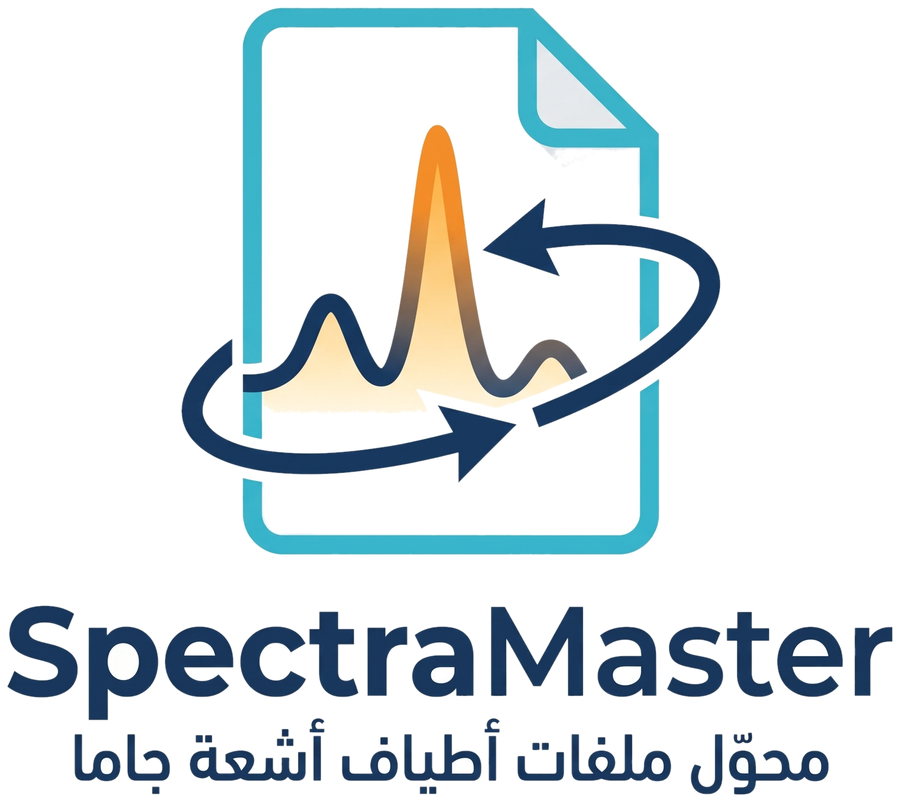
منظومة تحليل أطياف أشعة غاما: التحليل والمعايرة والنشاط الإشعاعي والتحويل والتقارير
الإصدار 1.0.0 · نظام Windows
SpectraMaster منظومة لتحليل أطياف أشعة غاما في المختبر، لكواشف HPGe و NaI. يحلّل الأطياف (القمم والنويدات
والأنشطة والتراكيز)، ويعايرها (الطاقة وقدرة الفصل والكفاءة)، ويحفظ التحليل جلسةً قابلة للتتبّع، ويطبع التقارير. ويحوّل
كذلك ملفات الأطياف على نهج برنامج DataMaster من ORTEC (A49-B32)، بقاعدة التسمية نفسها وسطر الأوامر نفسه
(-i input -j output بأرقام صيغ DataMaster)، وتتبع قوائمه ومفاتيحه وطريقة عمله برنامج Aptec PCMCA/WIN.
وبالتفصيل:
الواجهة ثنائية اللغة بالكامل (العربية والإنجليزية)، ويتذكّر البرنامج اختياراتك من جلسة إلى أخرى.
يتكوّن البرنامج من ملفين تنفيذيين، ولا يحتاج إلى تثبيت Python أو أي بيئة تشغيل أخرى.
| SpectraMaster.exe | البرنامج الرسومي (النوافذ والرسم والتحليل والتقارير). وإذا شُغّل بوسائط
DataMaster -i in -j out فإنه يحوّل الملف بصمت دون فتح أي نافذة. |
| smconvert.exe | محوّل سطر الأوامر ومجموعة الأدوات، للملفات الدفعية (batch) والسكربتات وجدولة المهام في Windows (الفصل 4 والملحق ب). |
SpectraMaster_Setup_1.0.0.exe (يلزم صلاحيات المسؤول) واختر لغة معالج التثبيت
(الإنجليزية أو العربية).C:\Program Files\SpectraMaster، ثم اختر المكوّنات: البرنامج
الرئيسي، وأداة سطر الأوامر smconvert (مع إمكانية إضافتها إلى متغير PATH للنظام)،
وأدلة المستخدم، والأطياف النموذجية..s0 .chn .cnf .spe .spc .iec .n42،
ويمكن إلغاء أي امتداد منها). تُفتح الملفات المرتبطة في SpectraMaster بنقرة مزدوجة، وتظهر لها جميعًا القائمة
.تحتوي مجموعة قائمة ابدأ على البرنامج ودليلَي المستخدم وملاحظات الإصدار
ومجلد الأطياف النموذجية وأداة إلغاء التثبيت. لتثبيت البرنامج على شريط المهام انقر بزر الفأرة الأيمن على اختصاره في
قائمة ابدأ (أو على زره في شريط المهام أثناء تشغيله) واختر . وتراخيص جميع
المكوّنات المرفقة في مجلد التثبيت (licenses\THIRD_PARTY_NOTICES.txt).
لإلغاء التثبيت استخدم أو اختصار قائمة ابدأ. يسألك برنامج الإزالة
هل تريد حذف بياناتك أيضًا (فهرس الأرشيف ومنحنيات الكفاءة وملفات الكواشف ومسارات مراقبة الجودة في
%APPDATA%\SpectraMaster والإعدادات)، والإجابة الافتراضية هي الاحتفاظ بها. ولا يزيل إلا ارتباطات الملفات الخاصة
بـ SpectraMaster ومدخله في PATH.
يتوفّر البرنامجان أيضًا كملفين تنفيذيين مضغوطين: انسخهما إلى أي مجلد (حتى ذاكرة USB) وشغّل
SpectraMaster.exe دون تثبيت. قد يستغرق التشغيل الأول بعد إعادة تشغيل الجهاز بضع ثوانٍ ريثما يفك Windows ضغطه.
عند التشغيل تظهر شاشة بداية فيها الشعار واسم المصمم ورقم الإصدار نحو ثانية ونصف (انقر عليها لإغلاقها فورًا). يمكن إيقافها من .
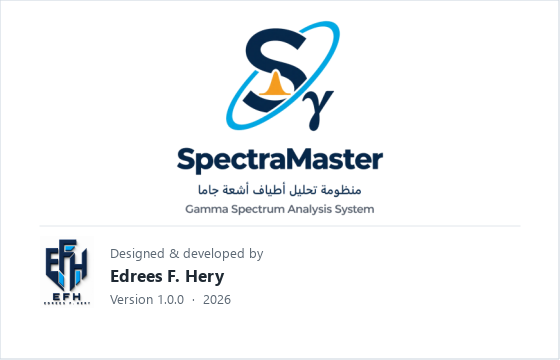
يبدأ البرنامج بالإنجليزية في المرة الأولى. لتغيير اللغة اختر ، فتتغير الواجهة كلها فورًا (بما في ذلك اتجاه التخطيط من اليمين إلى اليسار) ويُحفظ الاختيار. أما رسم الطيف فيبقى دائمًا من اليسار إلى اليمين (الطاقات المنخفضة يسارًا) في اللغتين، كما هو متعارف عليه في المطيافية.
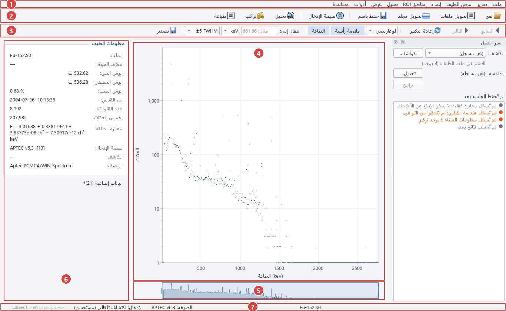
وتُفتح لوحات أخرى من : مناطق الاهتمام (ROI) ونتائج التحليل وحالة سير العمل (القسم 6.6).
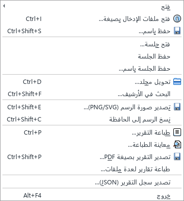
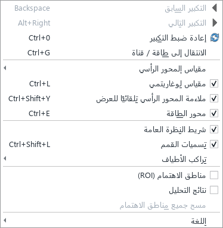
| ملف | فتح (طيف / عدة ملفات للتحويل)، فتح ملفات الإدخال بصيغة، حفظ باسم (Ctrl+Shift+S)، فتح جلسة / حفظ الجلسة، تحويل مجلد، البحث في الأرشيف، تصدير صورة الرسم أو نسخها، طباعة التقرير، معاينة الطباعة، تصدير التقرير بصيغة PDF، طباعة تقارير لعدة ملفات، تصدير سجل التقرير (JSON)، خروج. |
| تحرير | التحديد والنسخ إلى الحافظة، وصف العينة (F5)، وصف الكمية (F6)، بيانات الطيف، الشهادة، المكتبة، حساب تصحيح الاضمحلال، تحميل معلومات الرأس، تحميل ملف إلى MCArd، إعادة ضبط الرأس (القسم 7.7). |
| عرض الطيف | الطيف العادي والوسيط والمُثبَّت، ومنحنيات معايرة الطاقة والدقة والكفاءة. |
| إعداد | معايرة طاقة سريعة (F2)، ومعايرة الطاقة والدقة والكفاءة الكاملة (Shift+F2)، وأدوات معايرة متقدمة: معايرة الطاقة من مصدر، وفحص انجراف المعايرة، ومعايرة الكفاءة (الفصلان 8 و9). |
| مناطق ROI | الخصائص، رسم منطقة (F3)، تعديل (F4)، حذف المنطقة المؤشَّرة (Del)، حذف الكل، ترتيب، تعريف الأعلام (القسم 7.3). |
| تحليل | إعداد ‹، بحث القمم (P)، الملاءمة المتعددة (M)، التعرّف على القمم (I)، طرح الخلفية (B)، القياس الكمي (Q)؛ التحليل التلقائي عند الفتح، تسميات القمم؛ حساب النشاط الإشعاعي؛ فحص المواءمة والمواءمة اليدوية؛ تعليم النتائج بأنها رُوجعت وتحليل دفعي؛ ثم عمليات الطيف (القسم 7.5). |
| عرض | التفضيلات والألوان وشريط الوصول السريع، العرض المقسوم، المقاييس، تحريك المؤشر والنافذة، التنقل بين المناطق، خيارات رسم الطيف والمناطق، خيارات عرض إضافية (التكبير، والانتقال، والتراكب، واللوحات)، اللغة (القسم 7.6). |
| أدوات | مراقبة جودة الكاشف (الفصل 12). |
| مساعدة | دليل المستخدم (عربي / إنجليزي، F1)، اختصارات الفأرة ولوحة المفاتيح، التكامل مع GammaVision / MAESTRO، خيار شاشة البداية، حول SpectraMaster (الإصدار، وإصدار محرك التحليل، والمصمم، ومصادر البيانات، والقائمة الكاملة للصيغ). |
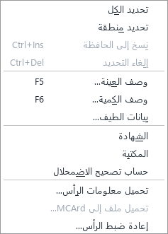
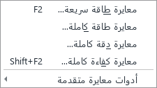
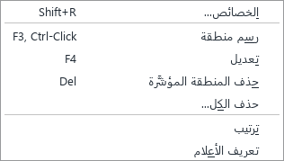
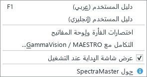
النقر بالزر الأيمن على الرسم يفتح قائمة سياقية فيها سجل التكبير، ومقياس المحور الرأسي، وحذف منطقة الاهتمام، والتحليل، والتسميات، والتراكب، وتصدير الصورة.
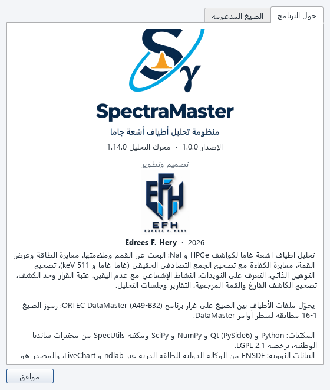
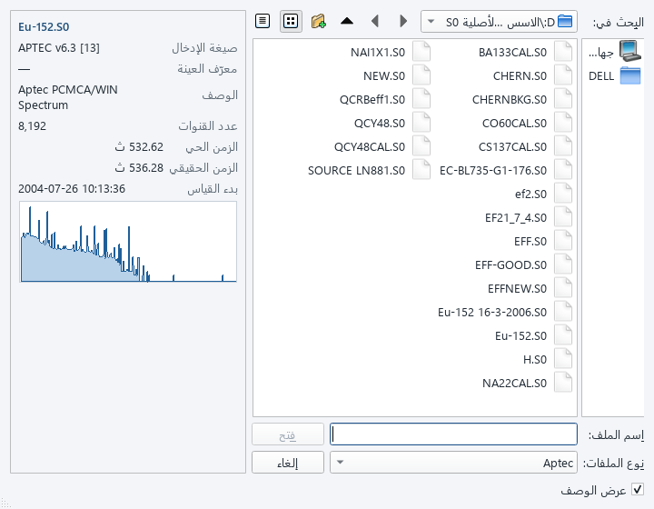
يعرض مرشّح الملفات جميع الامتدادات المقروءة؛ اختر جميع الملفات (*) للملفات ذات الامتدادات غير المعتادة، فالبرنامج يتعرّف على المحتوى لا على الاسم.
تُكتشف صيغة الإدخال تلقائيًا افتراضيًا من محتوى الملف (التواقيع الثنائية وكلمات الترويسة) ثم من الامتداد. وإذا لم يُعرف الملف بأيٍّ منهما، تفحص مرحلة أخيرة المحتوى وحده بالصيغ التي يمكن التعرّف عليها بأمان بهذه الطريقة (ASCII و Channel Data CSV و EML و IAEA ASCII .dat و NPL و Wallac و Laval و JCAC). ويحمل الطيف الذي عُرف بهذه الطريقة ملاحظة في شريط الحالة بأن صيغته عُرفت من المحتوى. وإذا انطبقت عدة صيغ ذكرتها الرسالة، فاختر واحدة يدويًا.
ويتيح (Ctrl+I) فرض صيغة معينة تمامًا كما في DataMaster. ينطبق الاختيار على الفتح والتحويل الدفعي والأطياف المتراكبة، ويظهر في شريط الحالة (الإدخال: …).
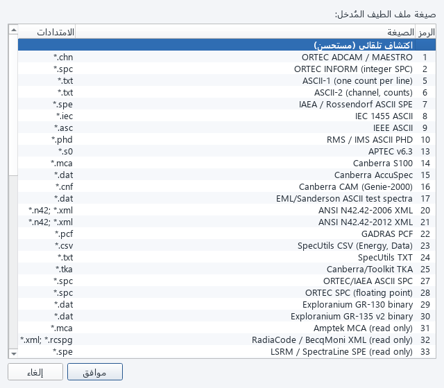
.spc و.dat و.txt
و.xml و.s0)، والاكتشاف التلقائي يميّز بينها بالمحتوى. لا تفرض صيغة إلا إذا فشل الاكتشاف
التلقائي؛ وإن عجزت الصيغة المفروضة عن قراءة الملف تقترح رسالة الخطأ العودة إلى الاكتشاف التلقائي.SpectraMaster.exe file1.S0 يفتح الملف عند التشغيل (ويُستخدم أيضًا مع «فتح باستخدام» في مستكشف Windows).الجدول الكامل مع الرموز في الملحق أ، وفي . وأكثر الصيغ استخدامًا في مختبرنا:
| الرمز | الصيغة | ملاحظات |
|---|---|---|
| 13 | Aptec v6.3 .S0 | قراءة وكتابة: العدّات والأزمنة ومعايرتا الطاقة و FWHM وسجلات العينة والمصدر ومناطق الاهتمام. أما Aptec v3.0 (78) و v4.3 (79) فللقراءة فقط. |
| 1 | ORTEC CHN | MAESTRO / GammaVision؛ تحفظ 3 حدود للمعايرة. |
| 7 | IAEA SPE | صيغة نصية مفتوحة؛ تحفظ النص العربي والمعايرة. |
| 16 | Canberra CAM .CNF (Genie-2000) | 3 حدود للمعايرة؛ الحقول النصية لاتينية فقط (انظر أدناه). |
| 20 / 21 | ANSI N42.42 XML | الصيغة المستحسنة للأرشفة طويلة الأمد. |
| 50 | Excel .xlsx | ورقة Spectrum (القناة، الطاقة، العدّات) وورقة Info. |
| 60–79 | عائلة صيغ الاستيراد والتصدير في Aptec | Aptec ASCII و Channel-Data CSV و Davidson و IAEA DAT و NPL و Rump و Wallac و Laval و BTI و CI-90 و JCAC و ND66 و Norland و Oxford وغيرها. |
… stores only 3 calibration terms: energy calibration refitted (max deviation 0.206 keV).
انتبه إلى قيمة الانحراف: أجزاء من مئة من الكيلو إلكترون فولت لا تضر، أما القيم الأكبر (الحد التكعيبي في أطياف 8k)
فقد تُزيح قمم الطاقات العالية. وتُحفظ المعاملات الأصلية ضمن البيانات الإضافية (original_energy_coeffs)
في الصيغ التي تدعم ذلك.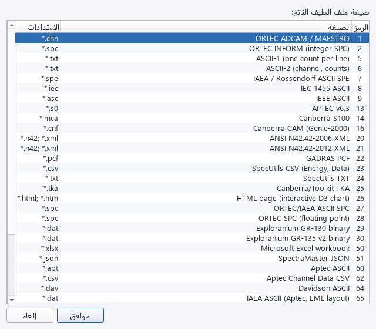
تظهر التحذيرات في شريط الحالة بعد الحفظ. وما لا تستطيع الصيغة حفظه لا يُغيَّر أبدًا دون تنبيه: يُعاد قراءة كل ملف مكتوب بالصيغة نفسها ويُبلَّغ عن كل اختلاف — العدّات، وعدد القنوات، وأول قناة، والطاقات (أكثر من 0.001 keV)، والزمنان الحي والحقيقي، وتاريخ البدء، ومعرّف العينة، والوصف، والكاشف، ومعايرة FWHM. والصيغ التي تُكتب فقط تذكر أنه تعذّر التحقق منها. وخصوصًا:
اسم الملف الناتج هو اسم ملف الإدخال مضافًا إليه امتداده بعد شرطة سفلية، ثم امتداد صيغة الإخراج:
CHERN.S0 ← CHERN_S0.chn. والملفات متعددة الأطياف تُرقَّم: RUN.n42 ←
RUN_n42_1.spe وRUN_n42_2.spe… وهكذا لا يُكتب ملف فوق آخر إذا حُوِّل A.S0 وA.CHN
كلاهما إلى SPE.
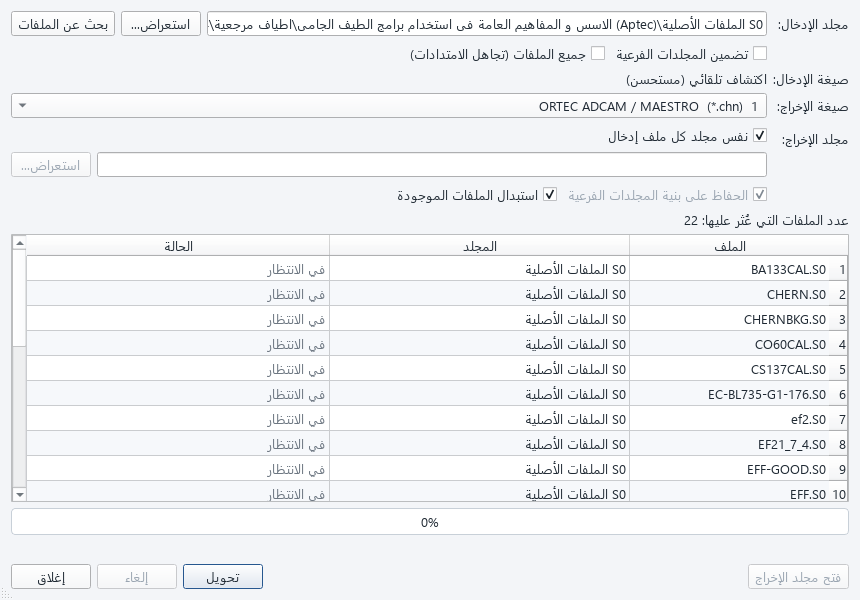
اختر صيغة الإخراج ثم مجلد الإخراج: نفس مجلد كل ملف إدخال، أو مجلدًا واحدًا — ومع الحفاظ على بنية المجلدات الفرعية تُعاد شجرة المجلدات داخله. ويتحكم خيار استبدال الملفات الموجودة في الكتابة فوق الملفات السابقة. اضغط تحويل؛ فيظهر لكل سطر «تم» أو عدد الملفات الناتجة أو تحذير أو رسالة الخطأ، ولا يوقف فشلُ ملفٍ الدفعةَ كلها. ويفتح زر فتح مجلد الإخراج مستكشف Windows على النتائج.
smconvert -i InputFile -j OutputFile (i, j = format codes, i = 0 auto-detects) smconvert -13 CHERN.S0 -1 "C:\Spectra\Converted Chern.chn" smconvert -0 SAMPLE.CNF -7 SAMPLE.SPE SpectraMaster.exe -13 CHERN.S0 -16 CHERN.CNF (silent, no window; on error the window opens)
رمز الخروج 0 عند النجاح و1 عند الفشل (و2 عند خطأ في الوسائط)، فيمكن للملفات الدفعية اختبار %ERRORLEVEL%.
وتُطبع إعادة مواءمة المعايرة واختلافات إعادة القراءة كتحذيرات.
smconvert formats list all formats with codes smconvert info CHERN.S0 all metadata of a file smconvert convert D:\Archive --to n42_2012 -r --out E:\N42 --keep-tree smconvert convert *.S0 --to chn glob patterns are accepted smconvert convert D:\In --from aptec_s0 --to 7 --no-overwrite -q
يقبل الخياران --to و--from الرمز (7) أو المفتاح (iaea_spe) أو اسمًا
مختصرًا (spe وchn وcnf). والأوامر الأخرى: peaks وidentify
وcalibrate وsum وsubtract وrebin وeffcal وactivity
وindex وrescue — انظر الفصول التالية والملحق ب.
smconvert rescue D:\OldArchive -o E:\Rescued --to n42_2012 --to ci_cnf --resume
يحوّل أرشيفًا كاملًا، ثم يعيد قراءة كل ملف ناتج للتحقق من العدّات والأزمنة، ويكتب سجلًا في مصنف Excel، ويمكن استئنافه
بعد أي انقطاع. أما الأرشيف الأصلي فيُقرأ فقط. والأمر smconvert index ROOT -o catalog.xlsx يكتب فهرسًا
بجميع الأطياف.يمكن لبرنامجي GammaVision و MAESTRO استدعاء SpectraMaster محوّلًا خارجيًا بدلًا من DataMaster. تعرض نافذة قيمتي Program وArguments بالضبط كما تُدخلان في GammaVision ()، مع أزرار نسخ.
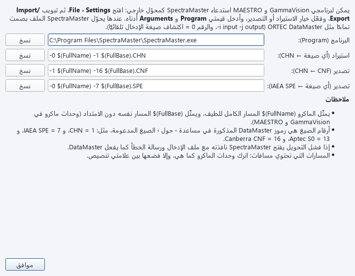
$(FullName) و$(FullBase) وحدتا ماكرو في GammaVision (المسار الكامل، والمسار دون امتداد).
وإذا فشل التحويل يفتح SpectraMaster نافذته مع ملف الإدخال ورسالة الخطأ، كما يفعل DataMaster.
القائمة نفسها متاحة في البرنامج من .
| المفاتيح / الفأرة | الإجراء |
|---|---|
| العجلة | تكبير المحور الأفقي حول المؤشر |
| Ctrl + العجلة / ↑ ↓ | تكبير المحور الرأسي (العدّات) |
| Shift + العجلة / ← → | تحريك أفقي (Shift+← → : نصف شاشة) |
| سحب أفقي | تكبير إلى نطاق القنوات المسحوب |
| سحب مستطيل | تكبير مستطيل للمحورين الأفقي والرأسي |
| Ctrl + سحب | تحديد منطقة اهتمام (ROI) |
| سحب بالزر الأيمن / الأوسط، Shift + سحب | تحريك (والرأسي أيضًا عند تكبيره) |
| نقر بالزر الأيمن | القائمة السياقية |
| + / − | تكبير / تصغير |
| Backspace, Alt + ← | التكبير السابق |
| Alt + → | التكبير التالي |
| Home، نقر مزدوج، Ctrl+0 | الطيف كاملًا |
| Ctrl + ← / → | القمة المكتشفة السابقة / التالية مع معلوماتها |
| Space، Tab (Shift: للخلف) | منطقة الاهتمام التالية؛ القمة المكتشفة التالية إن لم توجد مناطق اهتمام |
| نقر مزدوج على قمة | معلومات القمة (دون مناطق اهتمام) |
| Ctrl + G | الانتقال إلى طاقة / قناة |
| Ctrl + L | مقياس خطي / لوغاريتمي |
| Ctrl + Shift + Y | ملاءمة المحور الرأسي تلقائيًا |
| Ctrl + E | محور الطاقة / القنوات |
| F5 | بحث القمم والتعرّف على النويدات |
| Ctrl + Shift + L | إظهار / إخفاء تسميات القمم |
| Ctrl + Shift + O | إضافة طيف متراكب |
| Ctrl + Shift + E | تصدير صورة الرسم (PNG / SVG) |
| Ctrl + Shift + C | نسخ الرسم إلى الحافظة |
| Delete (جدول المناطق) | حذف منطقة الاهتمام المحددة |
| Ctrl + O | فتح طيف (مع المعاينة) |
| Ctrl + M | تحديد عدة ملفات للتحويل |
| Ctrl + D | تحويل مجلد |
| Ctrl + I | فتح ملفات الإدخال بصيغة (صيغة الإدخال) |
| Ctrl + S, Ctrl + Shift + S | حفظ باسم (اختيار صيغة الإخراج) |
| Ctrl + P | طباعة التقرير |
| Ctrl + Shift + P | تصدير التقرير بصيغة PDF |
| Ctrl + Shift + F | البحث في الأرشيف |
| F1 | دليل المستخدم بلغة الواجهة |
| Alt + F4 | خروج |
بعد التحليل يمكن زيارة القمم المكتشفة واحدة واحدة، كما في MAESTRO:
تظهر القمة المؤشَّرة في شريط الحالة (الطاقة والقناة والمساحة الصافية ± u ونويدتها، أو لا مطابقة في المكتبة)، وتُحدَّد في جدول القمم. وعند اختيار نويدة تُرسم خطوطها في المكتبة بالأخضر المتصل حيث توجد قمة مكتشفة عند الخط، وبالأزرق المتقطع حيث لا توجد.
اكتب طاقة في خانة انتقال إلى (Ctrl+G)، مثل 661.66، واضغط Enter.
تحدد خانة الوحدة keV أو القناة، وتحدد خانة العرض ±3/5/10 FWHM (من معايرة FWHM أو نموذج الكاشف) أو
±5…100 keV. الأطياف غير المعايرة تقبل أرقام القنوات فقط.
يمكن أن يكون محور العدّات خطيًا أو لوغاريتميًا أو جذرًا تربيعيًا (ويبدّل Ctrl+L بين الخطي واللوغاريتمي). وتلائم الملاءمة الرأسية محور العدّات مع الجزء المعروض. ويبدّل زر الطاقة (Ctrl+E) المحور الأفقي بين keV والقنوات (keV للأطياف المعايرة فقط).
ارسم منطقة بـ F3 أو بـ Ctrl+نقرة على يسار القمة ثم يمينها، أو ضعها تلقائيًا ببحث القمم (P). تعرض لوحة مناطق الاهتمام قناة البداية والنهاية والمركز والطاقة و FWHM (بالقنوات و keV) والمساحة الإجمالية والخلفية والصافية مع ±1σ و% الخطأ ومعدل العدّ الصافي والعلامات، ثم النظير والنشاط وMDA بعد التعرّف والقياس الكمي. وتُحسب الخلفية بقواعد Aptec من نقاط خارج طرفي المنطقة (خصائص المناطق، Shift+R). احذف المنطقة بـ Del أو بزر حذف أو مسح الكل، ويحفظ زر تصدير CSV... الجدول. التفاصيل في القسم 7.3.
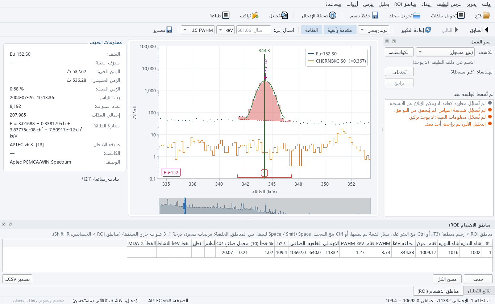
يرسم زر تراكب (Ctrl+Shift+O) أطيافًا أخرى — عادةً طيف الخلفية أو قياسًا سابقًا — فوق الطيف المعروض، كلٌّ بلون مختلف مع مفتاح للرسم. ويضرب خيار كل طيف متراكب في النسبة LTdisplayed/LToverlay (ويظهر المعامل في مفتاح الرسم). والأطياف ذات المعايرات المختلفة تُحاذى بالطاقة. ويمكن إزالتها واحدًا واحدًا أو جميعًا من القائمة السياقية.
يحفظ زر تصدير (Ctrl+Shift+E) العرض الحالي صورةً PNG أو رسمًا متجهيًا SVG (للتقارير والأبحاث)، وينسخه Ctrl+Shift+C إلى الحافظة للصقه في Word أو PowerPoint.
هذا التحليل بديل لطريقة Aptec (الفصل 7). اختره من ، ثم اضغط P () أو زر تحليل. يجري التحليل في الخلفية (بضع ثوانٍ لطيف HPGe من 8k قناة) ثم تُفتح لوحة نتائج التحليل. ومع يُحلَّل كل طيف فور فتحه.
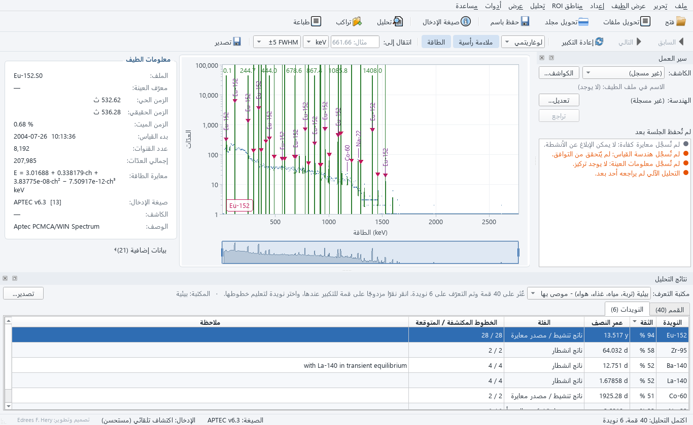
لكل قمة: الطاقة (keV)، وقناة المركز، و FWHM (keV)، والمساحة الصافية ± 1σ، ومعدل العدّ (cps)، والدلالة الإحصائية (المساحة الصافية مقسومة على ارتيابها)، والنويدة المنسوبة. النقر المزدوج على قمة يكبّر الرسم عندها. وتشير الملاحظات إلى القمم الخاصة: X-ray region (منطقة الأشعة السينية)، وannihilation (الفناء 511 keV)، وsingle / double escape (قمم الهروب الأحادي والثنائي)، وsum peak (قمة جمع، مثل 1173+1332)، وpossible backscatter (تشتت خلفي محتمل).
طريقة العمل باختصار:
لكل نويدة مرشحة: الثقة، وعمر النصف، والفئة (طبيعي، ناتج انشطار، ناتج تنشيط، مصدر معايرة، طبي، صناعي، أكتينيد؛ وللنويدات ذات المنشأين فئتان مثل «ناتج انشطار / مصدر معايرة» لـ Cs-137)، وعدد الخطوط المكتشفة / المتوقعة، وملاحظة (الانتماء إلى سلسلة طبيعية، «من الخلفية المعتادة»، والتداخلات مثل خط U-235 عند 185.7 keV تحت خط Ra-226 عند 186.2 keV). اختيار نويدة يعلّم جميع خطوطها في المكتبة على الرسم (القسم 5.3).
تكتب تسميات القمم (Ctrl+Shift+L) أسماء النويدات على الرسم، ويحفظ زر تصدير... في لوحة النتائج القمم والنويدات وبيانات الطيف في ملف Excel أو CSV.
إذا لم تكن للطيف معايرة طاقة تُعرض القمم بأرقام القنوات فقط ولا يُتعرَّف على أي نويدة (وتظهر رسالة توضح ذلك). أجرِ معايرة الطاقة أولًا (الفصل 8)، مثلًا بخطوط Eu-152 أو Co-60/Cs-137.
تضم المكتبة المدمجة 200 نويدة و2719 خطًا من أشعة غاما والأشعة السينية. القيم مأخوذة من تقييم ENSDF عبر قاعدة بيانات
ndlab التابعة للوكالة الدولية للطاقة الذرية (وهي القاعدة التي تقوم عليها LiveChart of Nuclides)، ومقارنة مع مكتبة
SandiaDecay من مختبرات سانديا الوطنية ومع البيانات الموصى بها من LNHB/DDEP. وقد حُذفت الخطوط المكررة من تقييم آخر،
واستُعيدت خطوط النواتج التي كانت مفقودة، وحيث يخالف تقييمُ الوكالة تقييمين آخرين تُستخدم قيمة DDEP (مثل خط Ac-228 عند
674.75 keV: 0.105 %). وتُدمج شدات النواتج قصيرة العمر في حالة الاتزان (Ba-137m و Pr-144 و Rh-106 و La-140 …) في شدات الأم،
أما أفراد السلاسل الطبيعية فمدخلات مستقلة. ويمكن استخدام مكتبة أخرى من سطر الأوامر:
smconvert identify FILE --lib mylib.csv بأسطر من الشكل nuclide, energy_keV, intensity_%[, half_life, category].
تعرض لوحة سير العمل () جلسة تحليل الطيف المعروض: الكاشف والهندسة والمعايرات وحالة كل خطوة، ملوّنة حسب مستواها. ويفتح زر الكواشف... ملفات تعريف الكواشف، ويصف زر تعديل... هندسة العينة. لكل ملف كاشف معرّف دائم، فتغيير اسم الكاشف يحفظ معايراته وجلساته. واختيار كاشف القياس تعديل يمكن التراجع عنه، وعندها يُنبَّه إلى أي معايرة كفاءة لكاشف آخر على أنها غير متوافقة.
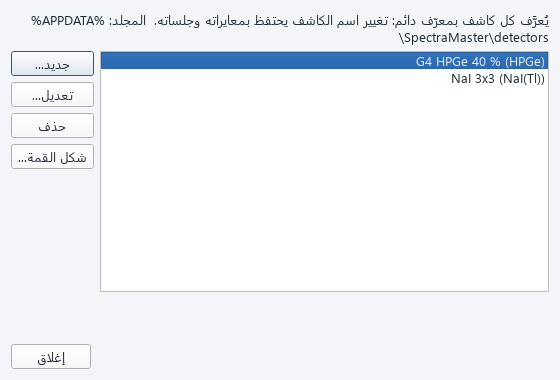
يقيس زر شكل القمة... في ملفات الكواشف ذيل الطاقة المنخفضة لقمم ذلك الكاشف من أطياف معايرة فيها قمم قوية ومتباعدة. تُقرأ الأطياف وتُقاس في الخلفية (جارٍ قياس شكل القمة ...)، ويُطلب تأكيدك قبل تسجيل النتيجة، ثم يوائم تحليل عينات هذا الكاشف القمم بهذا الشكل. ودونه تكون القمم غاوسية.
يحفظ الأمر الجلسة (.smsession): مرجع الطيف مع بصمته SHA-256،
والمعايرات، وملفي الخلفية والعينة الفارغة مع بصمتيهما، وجدول التوافق المستخدم، والنتائج، والمراجعة، وسجل التعديلات. وعند فتح
الجلسة يُتحقق من ملف الطيف بالبصمة. والنتائج التي حسبها إصدار أقدم من محرك التحليل تُعرض كما خُزّنت وتُعلَّم بأنها تحتاج إعادة
حساب؛ ويظهر إصدار المحرك في .
تعرض نافذة كيف وُوئمت كل قمة، وتتيح تصحيح المواءمة مع تسجيل كل تغيير.
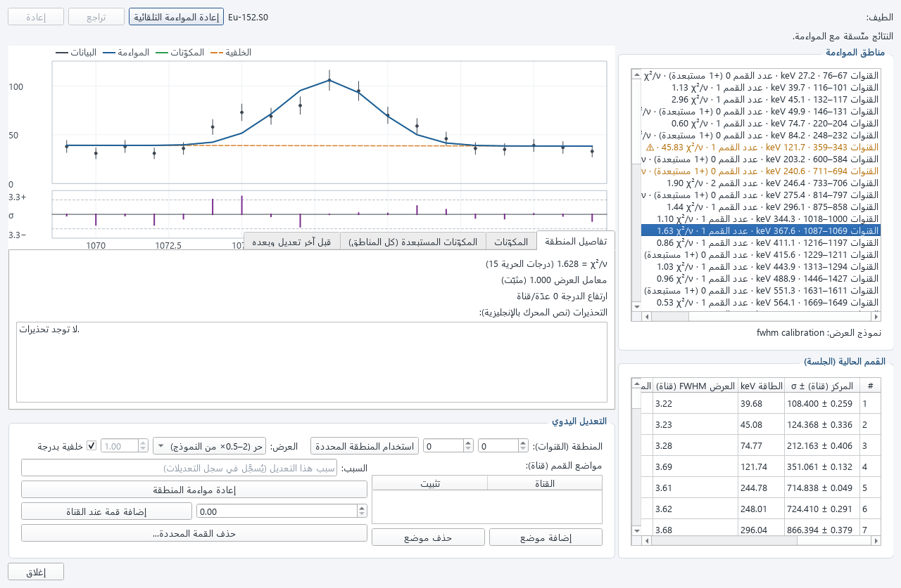
يتبع SpectraMaster ترتيب قوائم برنامج Aptec PCMCA/WIN 6.31 ومفاتيحه وطريقة عمله، حتى ينتقل إليه مستخدمو Aptec دون تعلّم جديد. شريط القوائم بالترتيب: . تعتمد هذه الطريقة على مناطق الاهتمام (ROI): تُوضع المناطق على القمم، ثم يُتعرَّف عليها، ثم يُحسب نشاطها. وطريقة Aptec هي الطريقة الافتراضية؛ أما التحليل بملاءمة القمم في الفصل 6 فيُختار من .
طُبّقت خوارزميات Aptec كما يصفها دليله، وقورنت بالنتائج التي خزّنها Aptec نفسه في ملفاته (القسم 7.8). ولم يُفكَّك برنامج Aptec ولم تُنسخ شيفرته.
| 1. المعايرة | F2 معايرة طاقة سريعة، أو Shift+F2 المعايرة الكاملة للطاقة والدقة والكفاءة (القسم 7.2). |
| 2. وصف العينة | F5 وصف العينة، وF6 وصف الكمية (الكمية ووحدتها وزمن النشاط). |
| 3. المناطق | P بحث القمم يضع المناطق تلقائيًا، أو F3 / Ctrl+نقرة لرسمها يدويًا. |
| 4. القمم المتداخلة | M الملاءمة المتعددة (MultiFit) تفصل المتعددات إلى قمم غاوسية. |
| 5. التعرّف | I يتعرّف على المناطق بمكتبة النظائر. |
| 6. الخلفية | B يطرح معدل عدّ الخلفية من المناطق المتعرَّف عليها (اختياري). |
| 7. النشاط | Q القياس الكمي: النشاط أو التركيز وMDA لكل منطقة. |
| 8. النتائج | قائمة مناطق الاهتمام وتصدير CSV، والتقارير (الفصل 10). |
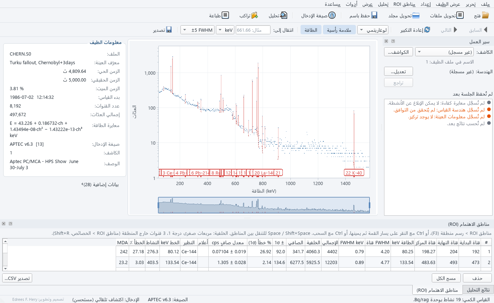
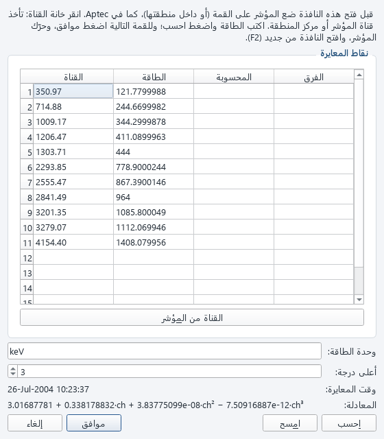
تُحسب إحصاءات المنطقة بقواعد Aptec: نقاط الخلفية خارج المنطقة، والمناطق المتلاصقة تتشارك خلفية واحدة، والمساحة الصافية = الإجمالي − الخلفية، و% الخطأ (1σ) = √(الإجمالي + الخلفية) / الصافي × 100، و MDA = (K² + 2K√(2B)) / الزمن الحي. وتطابقت هذه القواعد مع القيم التي خزّنها Aptec في 73 من 79 منطقة.
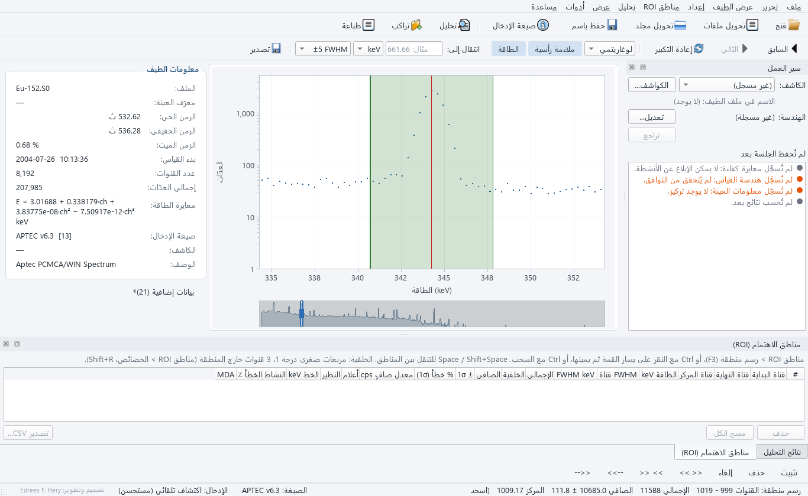
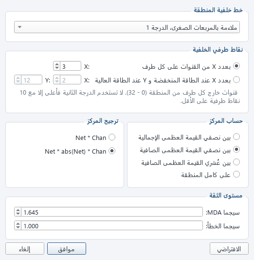
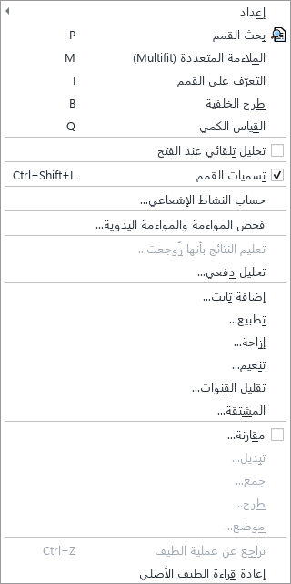
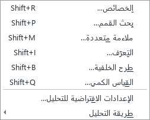
خصائص المناطق (Shift+R)، وبحث القمم (Shift+P)، والملاءمة المتعددة (Shift+M)، والتعرّف (Shift+I)، وطرح الخلفية (Shift+B)، والقياس الكمي (Shift+Q)، والإعدادات الافتراضية للتحليل (إعدادات المصنع، أو حفظ إعداداتك واستعادتها لكل ما سبق دفعة واحدة)، وطريقة التحليل (Aptec أو SpectraMaster).
يضع مناطق على القمم ثم يرفض كل منطقة يزيد خطؤها الصافي (1σ) عن الحد الأقصى لخطأ القمة، ويعيد حساب الخلفيات حتى تستقر النتيجة. ويمكن حصر البحث بين قناتين (جزئي). تنبيه: هذا البحث يتبع دليل Aptec، لكنه لا يطابق مناطق Aptec تمامًا: يجد نحو 79 ٪ منها (القسم 7.8). راجع المناطق دائمًا، وأضف أو احذف ما يلزم بـ F3 وDel.
تفكّك كل منطقة إلى قمم غاوسية بطريقة ماركوارت-ليفنبرغ. تعتبر المنطقة متعددة إذا كانت أعرض من معايرة الدقة أو
ظهر فيها أكثر من مركز معنوي. العرض ثابت من معايرة الدقة (أو متغير)، ويصبح متغيرًا تلقائيًا إذا وقعت 511 keV في
المنطقة؛ والخلفية ثابتة من نقاط الطرفين (أو متغيرة). وتُبقى القمة إذا كانت سعتها ≥ K × ارتيابها (K = 1.645).
وإن لم توجد معايرة دقة تُبنى معايرة تلقائية من عروض المناطق. تصبح كل قمة منطقة مستقلة بعلامة m
(والقمة المفردة الملاءَمة بعلامة s)، فيعمل التعرّف والقياس الكمي على القمم المفصولة، ويُرسم كل منحنى
غاوس ومجموعها. وتغيير خصائص المناطق يلغي الملاءمة.
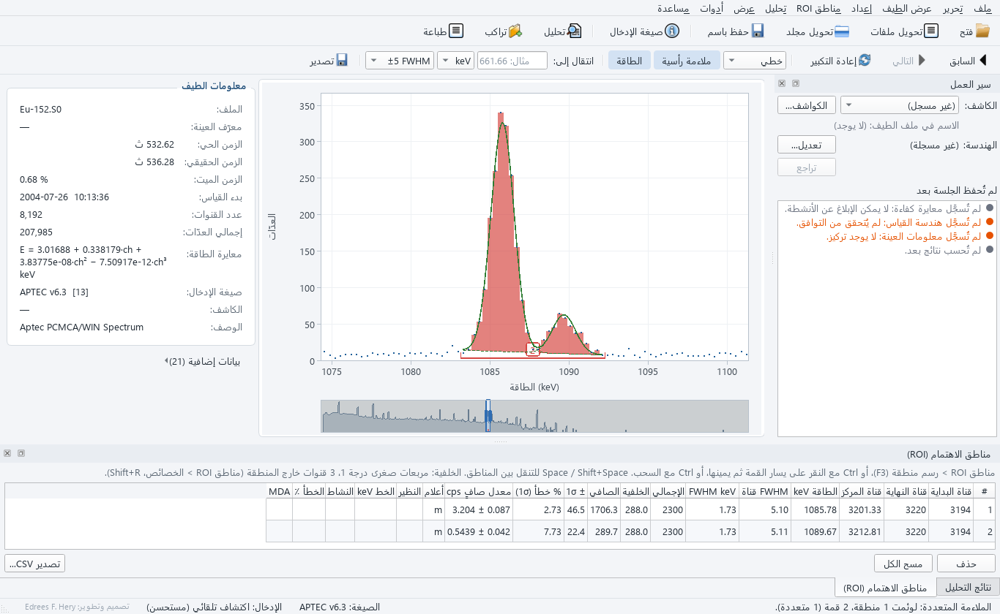
بمكتبة Aptec (isotope.lib) أو بمكتبة SpectraMaster المرفقة. خطوط المكتبة المرشحة هي التي تقع
ضمن التسامح حول طاقة مركز المنطقة: نسبة من FWHM المنطقة (الافتراضي 0.5)، أو تسامح ثابت بالـ keV.
ويُقبل النظير إذا حملت خطوطه التي عليها مناطق ما لا يقل عن حد النسبة (٪) من شدة كل خطوطه الواقعة في مدى
الطيف. ويمكن رفض النظائر التي تجاوز الاضمحلال منها حد عمر النصف.
اختر طيف الخلفية في Shift+B. يُبحث فيه ويُتعرَّف عليه بالإعدادات نفسها، ثم يُطرح معدل العدّ
الصافي لنفس خط النظير، بشرط أن يكون أعلى من MDA الخاص به، وتُجمع الارتيابات تربيعيًا (علامة b).
لم نجد ملفًا مطروح الخلفية من Aptec لمقارنة هذه الخطوة به.
النشاط = معدل العد الصافي / (الكفاءة × الشدة)، مصحّحًا للاضمحلال من بدء القياس حتى زمن النشاط (F6)، ومحوّلًا إلى الوحدة المختارة. ويُحسب كنشاط في العينة، أو تركيز (مقسومًا على الكمية)، أو نشاط كلي (التركيز × الكمية الكلية)، مع الضرب في الثوابت W/X/Y عند اختيارها. وفي وحدات الانبعاث (gamma/s) لا يُقسم على الشدة. تؤخذ الكفاءة من معايرة الكفاءة في ملف الطيف أو من منحنى محفوظ، عند طاقة مركز المنطقة كما يفعل Aptec.
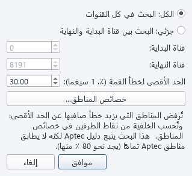
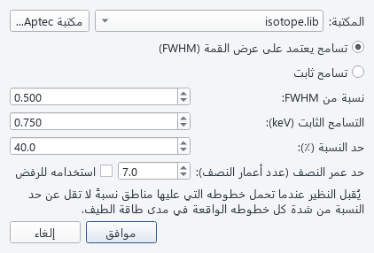
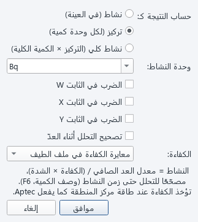
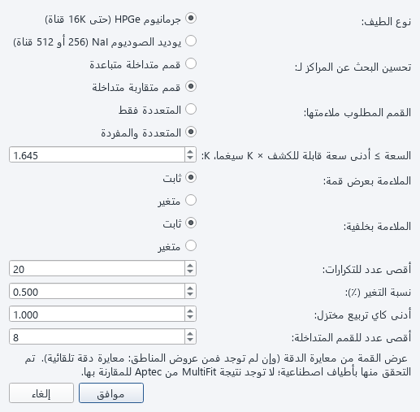
تُضاف إلى قائمة مناطق الاهتمام أعمدة النظير والخط keV والنشاط والخطأ ٪ وMDA، وتُصدَّر كلها إلى CSV. علامات Aptec في عمود «أعلام»:
? | معدل العد الصافي (أو النشاط) أقل من MDA. |
m / s | قمة من متعددة ملاءَمة / قمة مفردة ملاءَمة (MultiFit). |
b | طُرحت الخلفية. |
t | لم يُصحَّح الاضمحلال أثناء العد (العد أطول من 7 أعمار نصف). |
> | تجاوز تصحيح الاضمحلال إلى زمن النشاط حدود الحساب. |
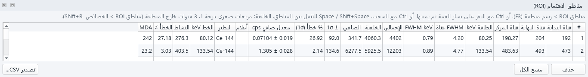
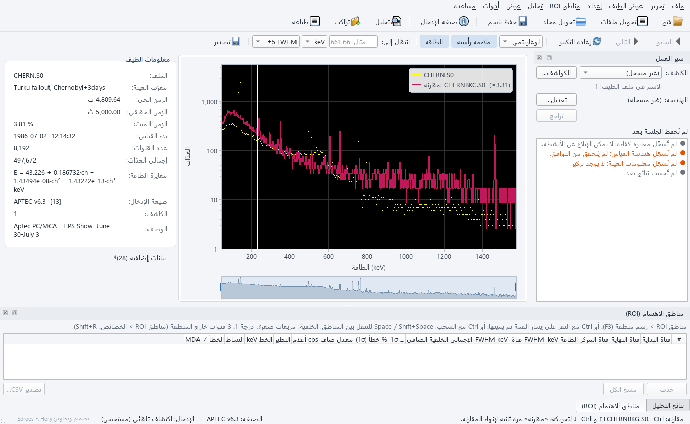
التفضيلات، والألوان (الافتراضية، أو أبيض وأسود للطباعة، أو ألوان Aptec)، وشريط الوصول السريع (Ctrl+8)، والموضع الافتراضي، وحفظ الإعدادات عند الخروج، والعرض المقسوم أفقيًا (H) أو رأسيًا (V). يُرسم الطيف نقاطًا كما في Aptec، ويمكن التبديل: رسم كل النقاط (L)، وتعبئة الطيف (F)، والشبكة (G)، ووصل النقاط (N)، والقمم الملاءَمة (K)، وتعبئة المناطق (Shift+F)، ومربع بيانات المنطقة (D)، وإظهار المناطق (Shift+D)، وتسميات المناطق (J)، ومؤشر القناة (Shift+J)، و FWHM كنسبة مئوية (%). والمقياس الرأسي: تلقائي (A)، وضبط تلقائي للحد الأدنى (Z)، والنوع التالي / السابق (S / Shift+S)؛ والأفقي: قنوات (C) أو طاقة (E). وتحرّك الأسهم مؤشر القناة، وPgUp/PgDn نافذة الطيف، وEsc يعرض الطيف كاملًا. وتضم أوامر العرض الخاصة بـ SpectraMaster (سجل التكبير، والانتقال، والتراكب، وتسميات القمم، واللوحات). القائمة الكاملة للمفاتيح في القسم 5.1.
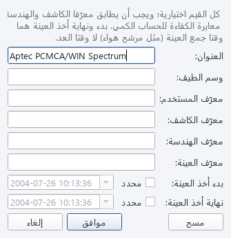
قورنت كل خطوة بالنتائج التي خزّنها Aptec في ملفاته (أرشيف المختبر، للقراءة فقط، ونُشرت الأرقام وحدها)، بمعايير نجاح حُدِّدت قبل القياس، وقُيّمت مرة واحدة على مجموعة اختبار منفصلة:
| الخطوة | النتيجة | الحكم |
|---|---|---|
| إحصاءات المناطق | الإجمالي 79/79، الخلفية والصافي والخطأ 73/79 | متطابقة |
| بحث القمم (4203 طيفًا) | يجد 79 ٪ من مناطق Aptec، ودقته 62 ٪، وفرق الحدود قناتان | فشل (الحدود 90 ٪ و85 ٪ وقناة) |
| التعرّف (736 منطقة) | يتفق مع Aptec في 88 ٪ | فشل (الحد 95 ٪) |
| القياس الكمي (49 منطقة) | 49/49 ضمن 0.003 ٪ بعد اكتشاف أن Aptec يأخذ الكفاءة عند طاقة المركز (45/49 بالطريقة المسجلة مسبقًا) | متطابق (الإصلاح اكتُشف لاحقًا) |
| الملاءمة المتعددة | لا توجد نتيجة MultiFit في أي ملف؛ تحقق بأطياف اصطناعية: انحياز ≤ 2.8 ٪ للثنائيات المتباعدة ≥ 1 FWHM | ناجحة (اصطناعيًا) |
| طرح الخلفية، والتنعيم، والمشتقة | لا توجد بيانات Aptec للمقارنة | غير متحقق منها |
التفاصيل في docs/baseline/aptec_* من مستودع البرنامج. والاتفاق مع Aptec ليس دليلًا على صحة أي من البرنامجين،
ولا يغني عن إجراءات التحقق المعتمدة في المختبر.
لا تُعدَّل ملفات الإدخال أبدًا: تُطبَّق المعايرة على الطيف المعروض (ولا تُحفظ إلا بـ أو في الجلسة)، وتكتب أدوات سطر الأوامر ملفات جديدة.
تقترح نافذة معايرةً من خطوط مصدر معلوم في الطيف المعروض.
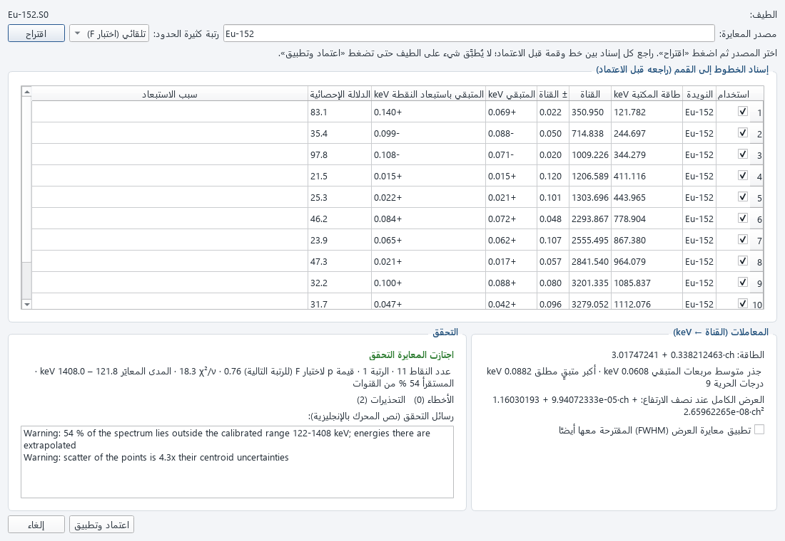
Eu-152) أو أكثر (Co-60,Cs-137) أو mixed أو
background (الخطوط الطبيعية). واختر رتبة كثيرة الحدود (تلقائي (اختبار F) أو 1–3) واضغط
اقتراح. يجري البحث في الخلفية.تقيس نافذة طاقات خطوط مرجعية في الطيف المعروض وتقارنها بالمعايرة الحالية. وترك الخطوط المرجعية فارغة يعني خطوط الخلفية الطبيعية (K-40 وسلسلتا اليورانيوم والثوريوم)، الموجودة في كل قياس طويل.
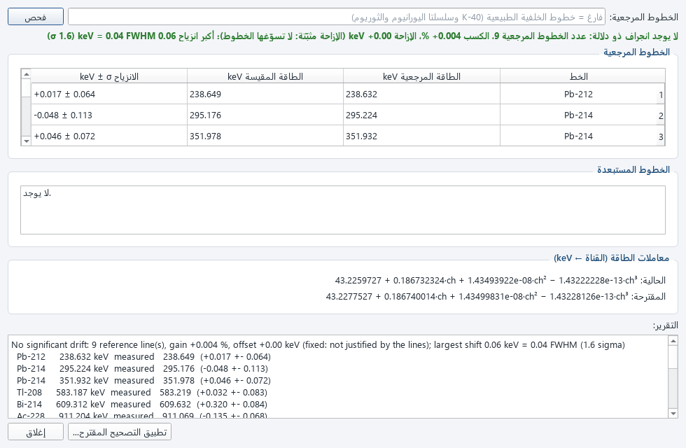
تعطي النتيجة تغيّر الكسب والإزاحة، وأكبر انزياح بالـ keV وبالـ FWHM وبوحدات σ، والخطوط المستبعدة وسببها، والمعاملات الحالية والمقترحة. ويستبدل زر تطبيق التصحيح المقترح... معايرة الطاقة للطيف المعروض بعد تأكيد يذكر إن لم يوجد انجراف ذو دلالة، ويُسجَّل التغيير في ملاحظة معايرة الطيف. لا تطبّقه إلا إذا كان الانجراف ذا دلالة.
smconvert calibrate Eu-152.S0 --source Eu-152 propose a calibration from source lines smconvert calibrate *.S0 --source Co-60,Cs-137 -o D:\Recal write recalibrated copies smconvert calibrate X.spe --pairs 1893.7:661.66,3364:1173.23,3812:1332.49 --order 2 -o D:\Recal smconvert calibrate X.spe --coeffs 0.12,0.3501,1.2e-8 -o D:\Recal apply known coefficients smconvert calibrate *.chn --source Eu-152 --only-uncalibrated -o D:\Recal
يعمل الخيار --source كما في القسم 8.1 (معايرة الطاقة، ومعايرة FWHM من العروض المقيسة)،
ويطبع جدولًا بالقناة والطاقة المعطاة والمحسوبة والمتبقيات. ودون -o لا يُكتب أي ملف. ويوائم الخيار
--fwhm ch:keV,… معايرة FWHM من أزواج معطاة.
Energy calibration, order 1: c0=3.01747241 c1=0.338212463 # channel given fitted residual 1 350.950 121.782 121.713 +0.0688 Eu-152 121.78 ... RMS residual 0.0608 keV, max |residual| 0.0882 keV, 9 degree(s) of freedom Fwhm calibration, order 2: c0=1.16030193 c1=9.94072333e-05 c2=2.65962265e-08
smconvert sum A.S0 B.S0 C.S0 -o SUM.spe [--align auto|channel|energy]
تُجمع العدّات والأزمنة الحية والحقيقية. وعند اختلاف المعايرات تُحاذى الأطياف بالطاقة (يُعاد توزيعها على معايرة الطيف
الأول)، ويفرض الخيار --align channel الجمع قناةً بقناة.
smconvert subtract CHERN.S0 CHERNBKG.S0 -o CHERN_net.spe [--scale K] [--clip] [--sigma-csv net.csv] net = sample - 3.31379 x background; net counts 301801 +- 1071
يُضرب طيف الخلفية في LTsample/LTbackground ما لم يُحدَّد --scale. ويجعل
--clip القنوات السالبة صفرًا، ويكتب --sigma-csv أيضًا القناة والطاقة والعدّات الصافية والارتياب
1σ المنتشر لكل قناة. والطيف المطروح لم يعد عدّات بواسون: لحساب الأنشطة حلّل الطيف المقاس مع خلفيته بدلًا منه
(القسم 9.2).
smconvert rebin CHERN.S0 --factor 2 -o CHERN_4k.spe 8192 -> 4096 channels smconvert rebin X.S0 --start 100 --stop 4196 --renumber -o part.spe
تُحوَّل المعايرة بحيث تبقى الطاقات صحيحة.
تعمل نافذة في أربعة تبويبات.
QCY48CAL.S0: قنينة 10 مل على بعد 10 سم من كاشف HPGe) أو
استخدام الطيف المعروض، واختياريًا طيف الخلفية. سطر لكل نويدة: النشاط (بكريل)، والارتياب %، وتاريخ المرجع، وعمر
النصف (بالثواني)، واختياريًا الخطوط بالشكل keV:yield% (فارغ = قيم المكتبة). املأها من سجلات Aptec (سجلات
المصدر المخزنة في ملفات .S0) أو قالب جاهز (QCY48 و QCRB1241 ومصدر Eu-152 نقطي) أو استيراد CSV... أو
يدويًا. ويمكن إدخال الارتياب المعياري المشترك بين جميع النويدات (مثل التحضير الوزني) مرة واحدة.%APPDATA%\SpectraMaster\efficiency\ ويظهر في نافذة حساب النشاط.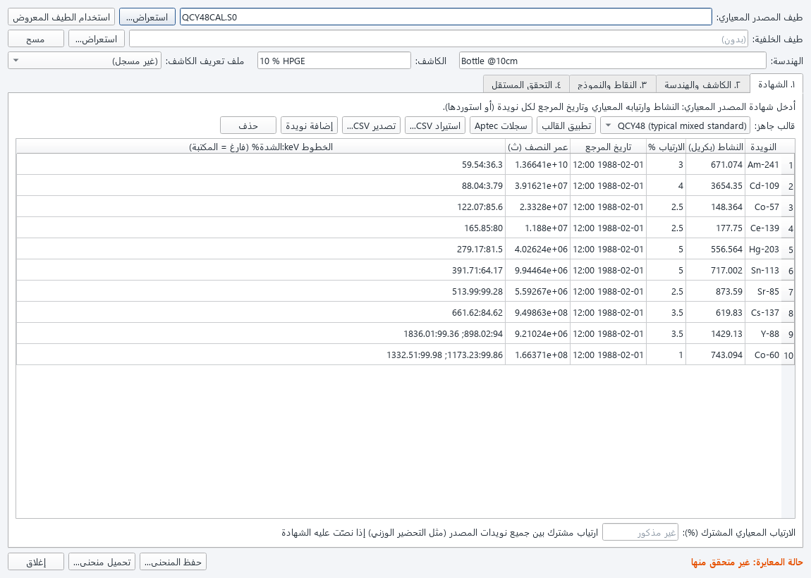
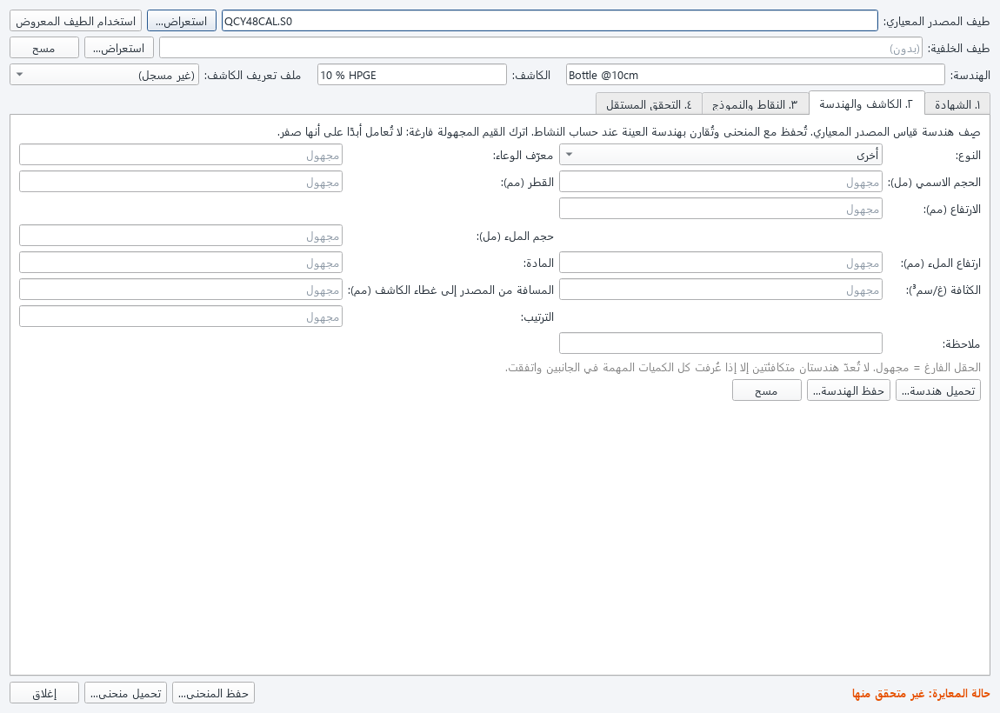
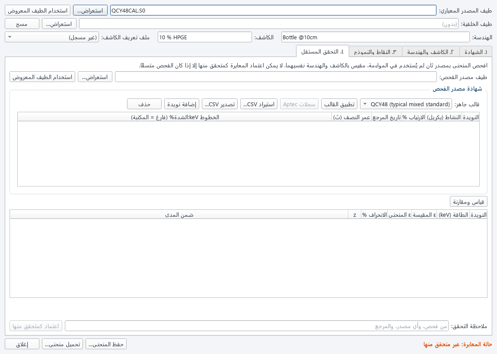
كفاءة النقطة: ε = N / (tlive · A(t0) · C · I)، حيث يُصحَّح النشاط للاضمحلال من تاريخ المرجع إلى بدء القياس، و C معامل الاضمحلال أثناء العدّ. ويجمع ارتياب المنحنى بين تغاير المواءمة (مضروبًا في χ²/ν إذا تجاوز 1)، والجزء المشترك بين جميع الخطوط من ارتياب الشهادة، وخطأ النموذج المحسوب بمواءمات استبعاد نقطة. والنقطة الشاذة الوحيدة يُحدّ أثرها في خطأ النموذج بثلاثة أضعاف تشتت المنحنى وتُذكر في تحذيرات المنحنى، فلا تضخّم كل النتائج.
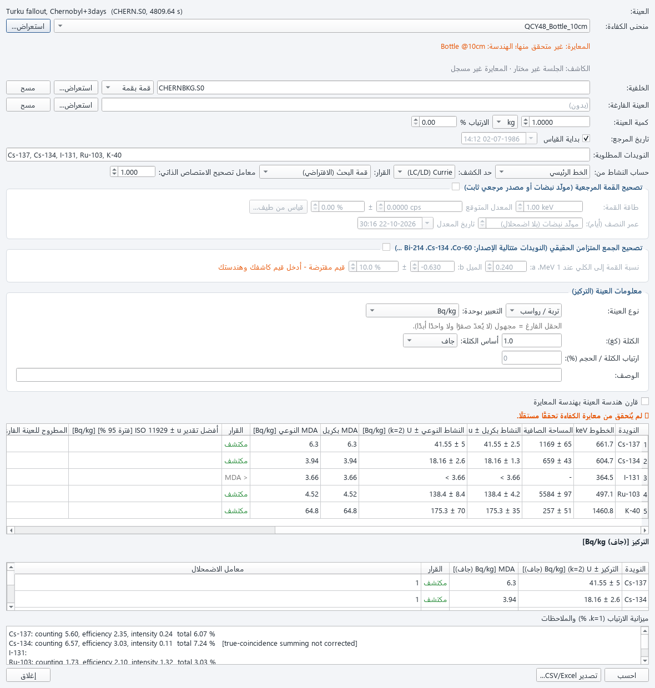
| النشاط بكريل ± u | النشاط مع ارتيابه المعياري المركّب (k = 1). |
| النشاط النوعي ± U (k=2) | النشاط لكل كغ (أو لتر…) مع الارتياب الموسَّع U = 2u. |
| MDA | أدنى نشاط قابل للكشف (بكريل ولوحدة الكمية)، محسوب من المتصل تحت القمة المتوقعة (Currie: LD = k² + 2LC و k = 1.645؛ ISO 11929: حد الكشف y#). |
| القرار | مكتشف إذا تجاوزت الإشارة الصافية عتبة القرار (LC في Currie أو y* في ISO)، وإلا < MDA. قد تكون النويدة مكتشفة بنشاط أقل من MDA الخاص بها (بين LC و LD)، وعندها تُذكر قيمتها مع ارتيابها. |
| أفضل تقدير ISO 11929 | أفضل تقدير مع ارتيابه وفترة التغطية 95 %، لكل نويدة، حتى إن لم تُكتشف. |
| النتيجة الأولية | للنويدة غير المكتشفة: نتيجة النافذة الموقَّعة G − B (الإجمالي ناقص المتصل في نافذة الخط)، وقد تكون سالبة. تُعطى للاطلاع، ويبقى عمود النشاط < MDA. ونتائج النوافذ المجاورة لقمة مكتشفة (متداخلة) أو الواقعة على متصل منحنٍ لا يناسبه خط مستقيم ولا قطع مكافئ (منحنية) تُعلَّم ولا تُستخدم. |
| المطروح للعينة الفارغة | نشاط العينة الفارغة المطروح من الخط (القسم 9.3). |
| الميزانية | المكونات النسبية (k = 1): العدّ، والكفاءة، واحتمال الانبعاث، والكمية، والامتصاص، وعند استخدامها: العينة الفارغة والقمة المرجعية وتصحيح الجمع. |
إذا كان طيف العينة قد طُرحت منه الخلفية أو طُرح منه طيف (Strip) أو طُبِّع أو نُعِّم، فقنواته لم تعد عدّات بواسون، فتحمل النتائج ملاحظة بأن ارتياباتها وعتبات القرار و MDA غير صالحة. حلّل الطيف المقاس مع خلفيته بدلًا من ذلك. والطيف المطروح منه سابقًا لا يُطرح منه مرة ثانية. وتُستخدم القمم المعدّلة يدويًا (القسم 6.7)؛ ومع خلفية يُعاد مواءمتها على العينة − k × الخلفية وتذكر الملاحظات ذلك.
العينة الفارغة عينة بلا مادة مقاسة تُحضَّر وتُعدّ مثل العينات (الكواشف والوعاء والهندسة نفسها). اختر طيفها في العينة الفارغة. تُحلَّل تمامًا مثل العينة (المنحنى والخيارات والخلفية نفسها) ويُطرح نشاطها خطًا بخط. ويدخل ارتيابها في الميزانية وفي عتبة القرار، بما فيه الجزء المشترك مع العينة من تصحيح القمة المرجعية. وإذا حُلِّلت بخيارات أخرى (الامتصاص، أو تصحيح الجمع، أو القمة المرجعية، أو الخلفية) يُنبَّه إلى ذلك في الملاحظات. وتؤخذ العينة والخلفية والعينة الفارغة والقمم كما هي لحظة الضغط على احسب. وتسجّل الجلسة والتقرير ملف العينة الفارغة مع بصمته SHA-256.
يصحّح الزمن الحي الزمن الميت، لكنه لا يصحّح كل فقد: الجمع العشوائي وتراكم النبضات يُفقدان كل قمة جزءًا من عدّاتها. والقمة المرجعية، من مولّد نبضات أو من مصدر مرجعي ثابت يُعدّ مع كل عينة، تقيس هذا الفقد. تُضرب كل نتيجة في K = المعدل المتوقع / المعدل المقاس لتلك القمة في طيف العينة.
النويدات التي تُصدر عدة فوتونات متتالية، مثل Co-60 و Cs-134 و Bi-214 و Y-88 و Ba-133 و Eu-152، تفقد قممها عدّات حين يُكشف فوتونان معًا؛ وتفقد كذلك باعثات البوزيترون (Na-22 و Co-58 …) عدّات بالجمع مع فوتونات الفناء 511 keV. وقد تكسب بعض الخطوط عدّات بالطريقة نفسها. ويكبر الفقد كلما اقترب المصدر من الكاشف. وعند تفعيل تصحيح الجمع المتزامن الحقيقي يُقسم كل خط لنويدة متتالية الانبعاث على معامل جمع التوافق من الدرجة الأولى (COI)، المحسوب من بيانات التوافق ومنحنى الكفاءة.
من سطر الأوامر: --tcs-pt A,B و--tcs-pt-unc و--tcs-curve-summing-free؛ و--blank FILE؛
و--ref-peak keV --ref-rate cps (أو --ref-spectrum FILE و--ref-half-life s).
العينة الأكثف من المصدر المعياري تمتص جزءًا أكبر من أشعتها، خاصة عند الطاقات المنخفضة.
--self-att-matrix و--self-att-density (العينة)، و--cal-matrix
و--cal-density (المصدر المعياري)، و--self-att-height-mm (ارتفاع العينة)، و--self-att-unc
(ارتياب النموذج %). والمواد: water (ماء) وorganic (راتنجات ومواد عضوية) وmineral (تربة
وخرسانة). ويُسجَّل معامل كل خط، ويدخل ارتيابه في الميزانية.smconvert activity SAMPLE.chn --eff curve.json --self-att-matrix organic --self-att-density 1.6 ^
--cal-matrix organic --cal-density 1.15 --self-att-height-mm 35
في معلومات العينة اختر نوع العينة (تربة / رواسب، مياه، غذاء، مرشح هواء، أخرى) والوحدة: Bq أو Bq/kg أو Bq/L أو Bq/m³.
smconvert effcal QCY48CAL.S0 -o qcy48.json --model two_branch --compare
model: two-branch log-log, Ec = 583.2 keV, orders 3/2 chi2/dof = 0.41
nuclide keV net eps u % fit resid %
Am-241 59.54 3614 0.0050063 4.46 0.0049738 0.65
Cs-137 661.62 10908 0.0070282 3.71 0.0068801 2.15
Co-60 1332.51 6885 0.0031553 2.03 0.0031223 1.06 cascade emitter ...
comparison with Aptec's stored efficiencies: Cs-137 661.62 Aptec 0.0071482 ours 0.0070282 -1.68 %
smconvert activity CHERN.S0 --eff qcy48.json --bkg CHERNBKG.S0 --nuclides Cs-137,Cs-134,I-131,Ru-103,K-40 ^
--mass 1 --unit kg -o chern.xlsx
Nuclide Line(s) keV Net area Activity Bq (k=1) Bq/kg (k=2) MDA Bq Decision
Cs-137 661.7 1169 ± 65 41.53 ± 2.5 41.53 ± 5.1 6.3 detected
Cs-134 604.7 659 ± 43 18.16 ± 1.3 18.16 ± 2.6 3.94 detected
I-131 364.5 - < 3.66 < 3.66 3.66 < MDA
Ru-103 497.1 5584 ± 97 138.4 ± 4.2 138.4 ± 8.4 4.52 detected
K-40 1460.8 257 ± 51 175.6 ± 35 175.6 ± 70 64.9 detected
Cs-134: true-coincidence summing not corrected
يظهر السطر الأخير لأن تصحيح الجمع لم يُطلب؛ ومع --tcs-pt A,B تُصحَّح خطوط Cs-134 (القسم 9.5). وتذكر
ملاحظات أخرى إعادة توزيع قنوات الخلفية، ونسبة الزمنين الحيين (k = 3.31)، وقاعدة القرار.
دون الخيار --cert تؤخذ الشهادة من سجلات Aptec داخل ملف .S0، ويعرض الخيار --compare الفرق
عن الكفاءات التي خزّنها Aptec نفسه (هنا ضمن ±6 %). أما ملف الشهادة CSV فأعمدته
nuclide,activity_bq,unc_percent,ref_date[,half_life_s,energy_kev,intensity_percent].
تفتح الأوامر (Ctrl+P) و و (Ctrl+Shift+P) نافذة خيارات التقرير أولًا. وإذا كان التقرير سيتضمن القمم أو النويدات ولم يُحلَّل الطيف بعد، يعرض البرنامج إجراء التحليل؛ فيجري في الخلفية، ويكمل التقرير تلقائيًا عند انتهائه (وإذا فشل التحليل تظهر رسالة الخطأ ولا يُكتب التقرير).
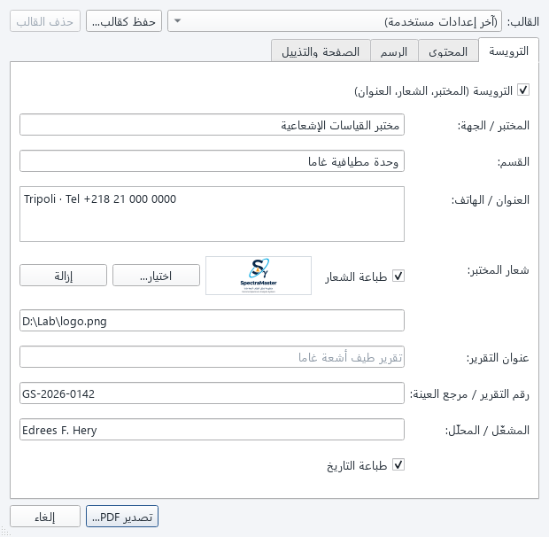
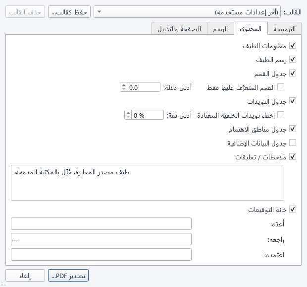
| الترويسة | المختبر، القسم، العنوان والهاتف، شعار المختبر، عنوان التقرير، رقم التقرير أو مرجع العينة، المحلّل، التاريخ. |
| المحتوى | معلومات الطيف، الرسم، جدول القمم (القمم المتعرَّف عليها فقط، أدنى دلالة)، جدول النويدات (أدنى ثقة، إخفاء نويدات الخلفية المعتادة)، جدول مناطق الاهتمام، البيانات الإضافية، المكتبة والكاشف والهندسة والتراكيز وحالات سير العمل، الملاحظات، خانة التوقيعات (أعدّه / راجعه / اعتمده). |
| الرسم | التكبير الحالي أو الطيف كاملًا، مقياس العدّات، محور الطاقة أو القنوات، تسميات القمم، تظليل مناطق الاهتمام، الأطياف المتراكبة، ارتفاع الرسم، رسوم متجهية أو صورة بدقة 300 نقطة/بوصة. |
| الصفحة والتذييل | الورق، الاتجاه، الهوامش، لغة التقرير (العربية أو الإنجليزية أو مثل الواجهة)، وعناصر التذييل (صفحة X من Y، اسم الملف، اسم البرنامج، تاريخ الطباعة ووقتها). |
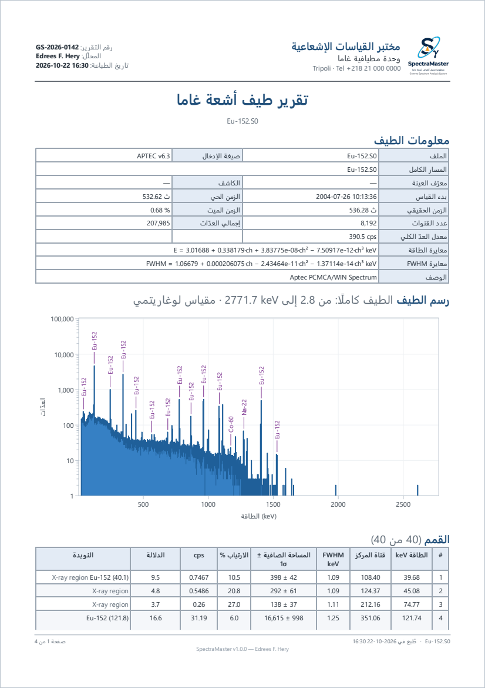
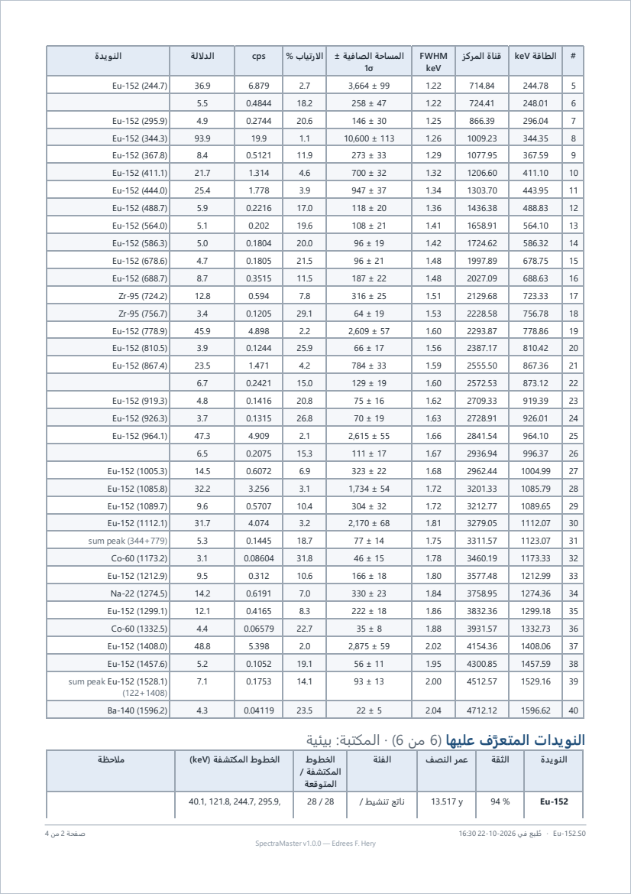
تبدأ النافذة دائمًا بآخر إعدادات مستخدمة. ويحفظ زر حفظ كقالب... الخيارات الحالية باسم (مثل «عينات غذائية – عربي»)، فتختاره لاحقًا من قائمة القالب. القوالب الجاهزة: تقرير كامل والرسم فقط وملخص النويدات. ويحذف زر حذف القالب القالب الذي أنشأه المستخدم.
من : أضف ملفات أو مجلدًا كاملًا، واضبط خيارات التقرير... مرة واحدة، ثم اختر ملف PDF لكل ملف طيف (في مجلد إخراج) أو ملف PDF واحد مجمَّع، وفعّل عند الحاجة إجراء بحث القمم والتعرّف على النويدات لكل ملف. اضغط إنشاء ملفات PDF، فتعرض القائمة عدد الصفحات المكتوبة أو الخطأ لكل ملف.
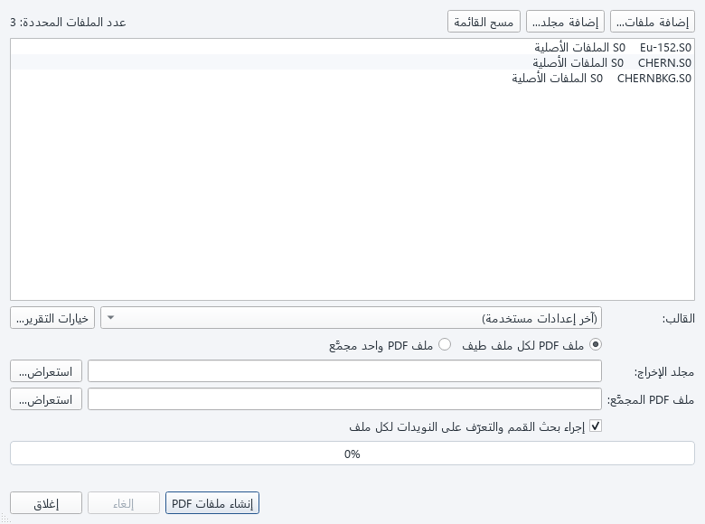
عند اكتمال تحليل طيف يسجّل المراجِع ذلك من : الاسم (يُتذكّر) وملاحظة اختيارية. ولا يمكن تعليم تحليل متقادم (تغيّر بعد حساب النتائج) بأنه رُوجع.
ويكتب الأمر السجل الكامل للتحليل: الطيف وبصمته، والمعايرات، والخلفية،
والعينة الفارغة، وجدول التوافق، والخيارات، والنتائج، وحالات سير العمل، والمراجعة، وسجل التعديلات. والسجل غير المكتمل للتقرير (مثل
أنشطة دون معايرة كفاءة) لا يُصدَّر إلا بعد سؤال، ويُعلَّم "reportable": false. والسجل موجّه لنظام إدارة معلومات المختبر
(LIMS) أو الأرشيف.
تحلّل نافذة أطيافًا كثيرة بالإعداد نفسه، وبأمان.
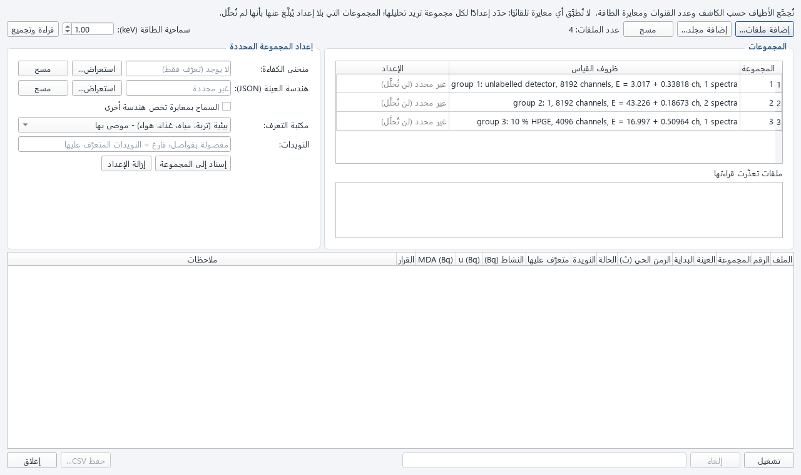
تعثر نافذة (Ctrl+Shift+F) على الأطياف في الأرشيفات الكبيرة — باسم العينة، أو كلمات في الوصف، أو النويدات المكتشفة، أو التاريخ، أو الكاشف، أو المجلد، أو الزمن الحي — دون نقل الملفات الأصلية أو تعديلها.
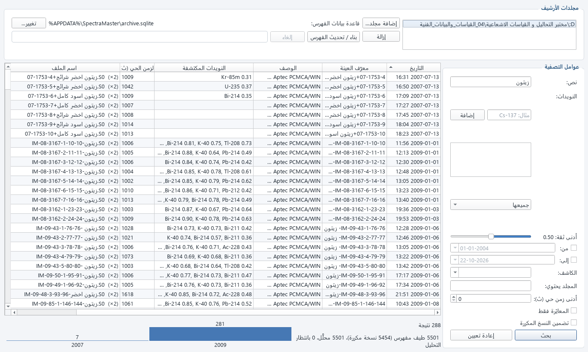
الفهرس ملف SQLite واحد، موضعه الافتراضي %APPDATA%\SpectraMaster\archive.sqlite (ويتيح زر تغيير... اختيار
ملف آخر، كنسخة مشتركة على الشبكة). وتُعرف النسخ المتطابقة بايتًا ببايت على أنها مكررة فتُحلَّل مرة واحدة. أما الملفات الأصلية
فتُقرأ فقط.
| نص | كلمات في معرّف العينة أو الوصف أو الملاحظات أو اسم الملف أو المجلد، ويجب أن تتطابق الكلمات كلها. |
| النويدات | أضف نويدة أو أكثر (مع الإكمال التلقائي، والصيغ Cs-137 وcs137 و137Cs
متكافئة)، واختر مطابقة جميعها أو أيٍّ منها، مع شريط أدنى ثقة. |
| التاريخ والكاشف والمجلد | من تاريخ / إلى تاريخ، واسم الكاشف، وجزء من مسار المجلد. |
| أخرى | أدنى زمن حي، والأطياف المعايَرة فقط، وتضمين النسخ المكررة. |
انقر نقرًا مزدوجًا على سطر لفتح الطيف في النافذة الرئيسية. وتتيح القائمة السياقية (الزر الأيمن): فتح في النافذة الرئيسية، وإضافة كطيف متراكب، وفتح المجلد الحاوي، ونسخ المسار. يمكن فرز الأعمدة، ويعرض المخطط البياني النتائج حسب السنة. ويحفظ زر تصدير النتائج إلى Excel / CSV... القائمة بالتاريخ والعينة والوصف والنويدات والأزمنة والكاشف والمسار وعدد النسخ.
ولأرشيف ضخم يمكن أيضًا كتابة فهرس Excel من سطر الأوامر بالأمر smconvert index، أما فهرس نافذة البحث فيُبنى من النافذة نفسها.
تحتفظ نافذة بمخططات تحكم لقياسات مصدر الفحص والخلفية لكل كاشف، كما يتطلب المعيار ISO/IEC 17025 (البند 7.7). ويُسجَّل لكل قياس: طاقة مركز القمة (انجراف الكسب والإزاحة)، وFWHM (قدرة الفصل)، ومعدل العدّ الصافي مصحّحًا للاضمحلال إلى تاريخ مرجعي (ثبات الكفاءة)، ومعدل الخلفية في نافذة طاقة، والزمنين الحي والميت.
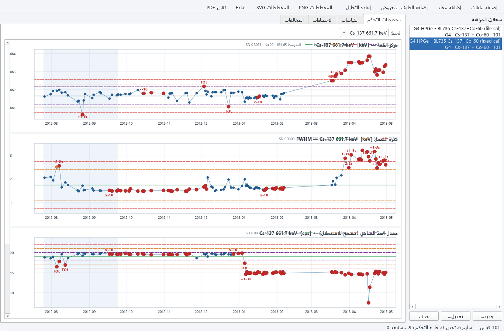
سجل المراقبة هو كاشف واحد مع مصدر فحص واحد (أو قياس خلفية). اضغط جديد... واملأ:
keV[:nuclide[:FWHM max]]، مثل 661.657:Cs-137, 1332.492:Co-60:2.0؛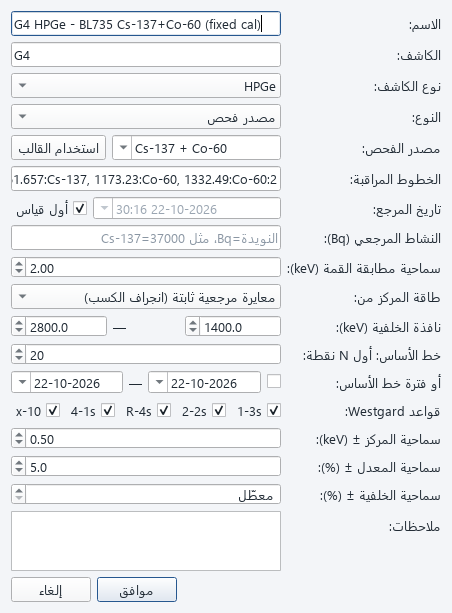
استخدم إضافة ملفات... أو إضافة مجلد... (مثل مجلد قياسات المراقبة لسنة كاملة) أو إضافة الطيف المعروض. يُحلَّل كل طيف مرة واحدة وتُحفظ قائمة قممه، فيمكن تعديل الخطوط والسماحيات لاحقًا دون إعادة قراءة الملفات، وتُتجاهل المكررات. ويعيد زر إعادة التحليل قراءة جميع الملفات المصدر. وفي جدول القياسات تتيح القائمة السياقية استبعاد نقطة من الإحصاءات (مع ملاحظة، مثل «أُعيد وضع المصدر»)، أو حذفها، أو عرض الطيف في النافذة الرئيسية.
يُحسب المتوسط والانحراف المعياري من نقاط خط الأساس؛ وحدود التحذير ±2σ وحدود الإجراء ±3σ. وتُطبَّق القواعد على جميع النقاط غير المستبعدة بترتيب التاريخ:
| القاعدة | المعنى | الخطورة |
|---|---|---|
1-2s | نقطة واحدة خارج ±2σ | تحذير |
1-3s | نقطة واحدة خارج ±3σ | خارج التحكم |
2-2s | نقطتان متتاليتان خارج 2σ في الجهة نفسها | خارج التحكم |
R-4s | نقطتان متتاليتان خارج 2σ في جهتين متعاكستين | خارج التحكم |
4-1s | أربع نقاط متتالية خارج 1σ في الجهة نفسها | خارج التحكم |
10-x | عشر نقاط متتالية في الجهة نفسها من المتوسط | خارج التحكم |
TOL | تجاوز سماحية ثابتة (المركز، أقصى FWHM، المعدل، الخلفية) | خارج التحكم |
SPLIT | انقسام الخط إلى قمتين (قفزة في الكسب أو الصفر أثناء القياس) | خارج التحكم |
يسرد تبويب المخالفات كل مخالفة بتاريخها وملفها وسلسلتها وقيمتها، ويعطي تبويب الإحصاءات عدد النقاط والمتوسط والانحراف المعياري ومعامل التغير % والاتجاه السنوي لكل خط وكمية.
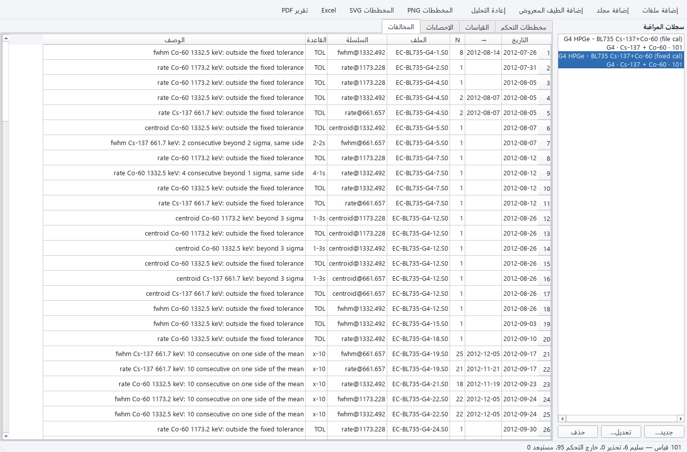
يحفظ زرا المخططات PNG... والمخططات SVG... المخططات، ويكتب زر Excel... مصنفًا بالقياسات والإحصاءات
والمخالفات، ويُنشئ زر تقرير PDF... تقرير مراقبة كاملًا (إعدادات السجل، والملخص، والمخططات، والإحصاءات، والقياسات،
والمخالفات، وسطر للتوقيع) بلغة الواجهة. وتُحفظ السجلات ملفات JSON في %APPDATA%\SpectraMaster\qc\.
تأكد أن الملف طيف فعلًا (وليس تقريرًا أو ملف معايرة) وأنه غير فارغ. جرّب
مع الصيغة المتوقعة، ويعرض الأمر smconvert info FILE --from CODE رسالة الخطأ الدقيقة للقارئ. وإذا لم يكن
الاكتشاف التلقائي مفعّلًا فالسبب الأكثر شيوعًا صيغة مفروضة خاطئة — ووضع الإدخال الحالي ظاهر في شريط الحالة. وإذا ذكرت
الرسالة عدة صيغ محتملة فاختر الصحيحة يدويًا.
قد يكون نموذج العرض خاطئًا (معايرة FWHM لكاشف آخر، أو بقناة واحدة). ابحث عن ملاحظة FWHM model implausible، وأعد معايرة FWHM من مصدر (القسم 8.1) فهي تُواءم العروض المقيسة، وافحص المواءمات (القسم 6.7).
الطيف مطروحة منه الخلفية مسبقًا أو مطروح منه طيف أو مطبَّع أو منعَّم. افتح الطيف المقاس وأعطِ الخلفية في نافذة حساب النشاط بدلًا من ذلك.
نافذة مشروطة مفتوحة (معايرة الطاقة السريعة، أو المعايرة الكاملة، أو فحص المواءمة)، وقد تكون خلف نافذة أخرى: أكملها أو ألغها. أما العمليات الطويلة فتعرض رسالة انتظار وتبقى النافذة تستجيب.
تُضبط النوافذ على مقاس الشاشة عند فتحها؛ مرّر المحتوى، ويبقى صف الأزرار الأخير ظاهرًا. وكبّر النافذة بزر شريط العنوان أو بنقر مزدوج على العنوان.
صيغ CNF و CHN و SPC لا تخزّن إلا نصًا لاتينيًا (القسم 3.4). احتفظ بملف Aptec S0 أو SPE أو N42 أو Excel نسخةً مرجعية. ويعرض البرنامج تحذيرًا عند الحفظ أو التحويل إلى صيغة لا تخزّن إلا نصًا لاتينيًا (CHN و SPC و CNF و S100 و ND66) إذا كان معرّف العينة أو الوصف أو الكاشف يحتوي على حروف عربية.
ليست خطأ: الصيغة الهدف لا تتسع لكثير حدود المصدر. الانحرافات الصغيرة (≲ 0.05 keV) مقبولة؛ وللأكبر منها اختر صيغة تحفظ المعايرة كاملة (Aptec S0 أو IAEA SPE أو N42 أو JSON أو Excel).
لا يوجد طيف مفتوح، أو الطيف فارغ، أو (بطريقة SpectraMaster) محرك التحليل غير متاح. ولا يُتعرَّف على النويدات في الأطياف غير المعايرة.
انسخ قيمتي Program و Arguments من جديد من ، وضع المسارات التي فيها مسافات بين علامتي تنصيص إذا لم تستخدم وحدات الماكرو.
| التفضيلات | اللغة، وآخر المجلدات، وصيغتا الإدخال والإخراج، وتخطيط النوافذ، وخيارات العرض، وقوالب التقارير:
في سجل Windows تحت المفتاح HKEY_CURRENT_USER\Software\SpectraMaster\SpectraMaster. |
| فهرس الأرشيف | %APPDATA%\SpectraMaster\archive.sqlite (يمكن تغييره من النافذة). |
| منحنيات الكفاءة | %APPDATA%\SpectraMaster\efficiency\*.json |
| ملفات الكواشف | %APPDATA%\SpectraMaster\detectors\*.json |
| سجلات مراقبة الجودة | %APPDATA%\SpectraMaster\qc\*.json |
| جلسات التحليل | حيث تحفظها (.smsession). |
المجلد %APPDATA% هو عادةً C:\Users\<name>\AppData\Roaming. انسخ مجلد SpectraMaster
احتياطيًا مع بيانات المختبر. وحذف مفتاح السجل يعيد جميع التفضيلات إلى قيمها الافتراضية.
الرموز من 1 إلى 16 هي أرقام DataMaster، وتُستخدم مع -i/-j ومع --to و--from.
| الرمز | المفتاح | الصيغة | الامتدادات | قراءة | كتابة |
|---|---|---|---|---|---|
| 1 | ortec_chn | ORTEC ADCAM / MAESTRO | *.chn | ✓ | ✓ |
| 2 | ortec_spc | ORTEC INFORM (integer SPC) | *.spc | ✓ | ✓ |
| 5 | ascii1 | ASCII-1 (one count per line) | *.txt | ✓ | ✓ |
| 6 | ascii2 | ASCII-2 (channel, counts) | *.txt | ✓ | ✓ |
| 7 | iaea_spe | IAEA / Rossendorf ASCII SPE | *.spe | ✓ | ✓ |
| 8 | iec1455 | IEC 1455 ASCII | *.iec | ✓ | ✓ |
| 9 | ieee_asc | IEEE ASCII | *.asc | ✓ | ✓ |
| 10 | rms_phd | RMS / IMS ASCII PHD | *.phd | ✓ | — |
| 13 | aptec_s0 | APTEC v6.3 | *.s0 | ✓ | ✓ |
| 14 | ci_s100 | Canberra S100 | *.mca | ✓ | ✓ |
| 15 | ci_accuspec | Canberra AccuSpec | *.dat | ✓ | — |
| 16 | ci_cnf | Canberra CAM (Genie-2000) | *.cnf | ✓ | ✓ |
| 17 | eml_sanderson | EML/Sanderson ASCII test spectra | *.dat | ✓ | — |
| 20 | n42_2006 | ANSI N42.42-2006 XML | *.n42 *.xml | ✓ | ✓ |
| 21 | n42_2012 | ANSI N42.42-2012 XML | *.n42 *.xml | ✓ | ✓ |
| 22 | gadras_pcf | GADRAS PCF | *.pcf | ✓ | ✓ |
| 23 | specutils_csv | SpecUtils CSV (Energy, Data) | *.csv | ✓ | ✓ |
| 24 | specutils_txt | SpecUtils TXT | *.txt | ✓ | ✓ |
| 25 | tka | Canberra/Toolkit TKA | *.tka | ✓ | ✓ |
| 26 | html_d3 | HTML page (interactive D3 chart) | *.html *.htm | — | ✓ |
| 27 | spc_ascii | ORTEC/IAEA ASCII SPC | *.spc | ✓ | ✓ |
| 28 | spc_float | ORTEC SPC (floating point) | *.spc | ✓ | ✓ |
| 29 | exploranium_gr130 | Exploranium GR-130 binary | *.dat | ✓ | ✓ |
| 30 | exploranium_gr135 | Exploranium GR-135 v2 binary | *.dat | ✓ | ✓ |
| 31 | amptek_mca | Amptek MCA (read only) | *.mca | ✓ | — |
| 32 | radiacode_xml | RadiaCode / BecqMoni XML (read only) | *.xml *.rcspg | ✓ | — |
| 33 | lsrm_spe | LSRM / SpectraLine SPE (read only) | *.spe | ✓ | — |
| 34 | multiact | MultiAct (read only) | *.spm | ✓ | — |
| 35 | labzy_lzs | LabZY nanoMCA LZS (read only) | *.lzs | ✓ | — |
| 36 | caen_gxml | CAEN Hexagon GXML (read only) | *.gxml | ✓ | — |
| 37 | specutils_json | SpecUtils JSON (read only) | *.json | ✓ | — |
| 38 | tracs_mps | TRACS MPS (read only) | *.mps | ✓ | — |
| 39 | aram | ARAM (read only) | *.xml | ✓ | — |
| 40 | microraider | ICx MicroRaider XML (read only) | *.xml | ✓ | — |
| 41 | spm_daily | Spectroscopic portal daily file (read only) | *.txt | ✓ | — |
| 42 | scandata_xml | ScanData XML (read only) | *.xml | ✓ | — |
| 43 | ortec_listmode | ORTEC list mode (read only, summed) | *.lis | ✓ | — |
| 50 | excel_xlsx | Microsoft Excel workbook | *.xlsx | ✓ | ✓ |
| 51 | json | SpectraMaster JSON | *.json | ✓ | ✓ |
| 60 | aptec_ascii | Aptec ASCII | *.apt | ✓ | ✓ |
| 61 | bti_ascii | BTI ASCII (read only) | *.bti | ✓ | — |
| 62 | chandata_csv | Aptec Channel Data CSV | *.csv | ✓ | ✓ |
| 63 | ci90_ascii | Canberra Series 90 ASCII (read only) | *.o | ✓ | — |
| 64 | davidson_ascii | Davidson ASCII | *.dav | ✓ | ✓ |
| 65 | iaea_ascii_dat | IAEA ASCII (Aptec, EML layout) | *.dat | ✓ | ✓ |
| 66 | npl_ascii | NPL ASCII | *.txt | ✓ | ✓ |
| 67 | rump_ascii | Rump ASCII (RBS) | *.mac | ✓ | ✓ |
| 68 | wallac_ascii | Wallac ASCII (1024 ch) | *.001 | ✓ | ✓ |
| 69 | laval_ascii | Laval ASCII | *.de1 | ✓ | ✓ |
| 70 | jcac_vax | JCAC VAX | *.spc | ✓ | ✓ |
| 71 | nd66 | Nuclear Data ND66 | *.001 | ✓ | ✓ |
| 72 | norland5000 | Norland PHA-5000 | *.dat | ✓ | ✓ |
| 73 | oxford_ans | Oxford ANS | *.ans | ✓ | ✓ |
| 74 | quantrad_scout | Quantrad Scout (read only) | *.sct | ✓ | — |
| 75 | spectran_f | Spectran F (read only) | *.spc | ✓ | — |
| 76 | nucleus_pca | Nucleus PCA-I/PCA-II (read only) | *.spm | ✓ | — |
| 77 | pca_multiport | PCA-Multiport (read only) | *.spt | ✓ | — |
| 78 | aptec_v30 | APTEC v3.0 (read only) | *.s0 | ✓ | — |
| 79 | aptec_v43 | APTEC v4.3 (read only) | *.s0 | ✓ | — |
| 80 | lab_dat1670 | EMCA2000 binary .dat (read only) | *.dat | ✓ | — |
ناتج الأمرين smconvert --help وsmconvert COMMAND --help. وتقبل وسائط الصيغ الرمز أو المفتاح أو الاسم
المختصر. أما smconvert دون وسائط فيطبع ملخص الاستخدام ويذكّر بأن البرنامج الرسومي هو SpectraMaster.exe.
usage: smconvert [-h] COMMAND ...
Gamma-spectrum file converter (DataMaster compatible).
positional arguments:
COMMAND
convert convert files, folders or glob patterns
info print the metadata of spectrum files
formats list supported formats and their codes
peaks search and fit peaks, print a peak table
identify identify nuclides (peak search + library matching)
gui start the graphical interface
index catalogue a spectrum archive into an Excel workbook
rescue convert + verify a whole archive (resumable)
sum sum spectra (energy-aligned if calibrations differ)
subtract subtract a live-time normalised background
rebin compress channels (x2, x4 ...) and/or truncate the range
calibrate fit / propose / apply an energy (and FWHM) calibration
batch group spectra by detector/channels/calibration; analyse one
group
effcal efficiency calibration from a certified standard spectrum
activity activity, specific activity and MDA of a sample spectrum
options:
-h, --help show this help message and exit
DataMaster form: spectramaster -i INPUT -j OUTPUT (i, j = format codes from
'spectramaster formats'; i = 0 auto-detects)
convertusage: smconvert convert [-h] --to TO [--from IN_FMT] [--out OUT]
[--recursive] [--keep-tree] [--no-overwrite]
[--quiet]
inputs [inputs ...]
positional arguments:
inputs input files, folders or glob patterns
options:
-h, --help show this help message and exit
--to, -t TO output format key, alias or code
--from, -f IN_FMT input format key/code, or 'auto' (default)
--out, -o OUT output folder (default: next to each input)
--recursive, -r walk sub-folders
--keep-tree recreate the input sub-folder structure inside --out
--no-overwrite skip existing outputs (reported as failures)
--quiet, -q only print failures and the summary
infousage: smconvert info [-h] [--from IN_FMT] files [files ...] positional arguments: files options: -h, --help show this help message and exit --from, -f IN_FMT
formatsusage: smconvert formats [-h] options: -h, --help show this help message and exit
peaksusage: smconvert peaks [-h] [--from IN_FMT] [--min-sig MIN_SIG]
files [files ...]
positional arguments:
files
options:
-h, --help show this help message and exit
--from, -f IN_FMT
--min-sig MIN_SIG significance threshold (default 3)
identifyusage: smconvert identify [-h] [--from IN_FMT] [--min-sig MIN_SIG]
[--lib LIB] [--min-conf MIN_CONF] [--peaks]
files [files ...]
positional arguments:
files
options:
-h, --help show this help message and exit
--from, -f IN_FMT
--min-sig MIN_SIG peak significance threshold (default 3)
--lib LIB nuclide library (JSON like the bundled one, or CSV
nuclide,energy_keV,intensity_%[,half_life,category])
--min-conf MIN_CONF minimum confidence 0..1 (default 0.25)
--peaks also print the peak table with assignments
guiusage: smconvert gui [-h] [files ...] positional arguments: files options: -h, --help show this help message and exit
indexusage: smconvert index [-h] -o OUT [--no-recursive] [--all-files]
[--quiet]
root
positional arguments:
root archive folder (read only)
options:
-h, --help show this help message and exit
-o, --out OUT catalogue .xlsx (outside the archive)
--no-recursive do not walk sub-folders
--all-files sniff every file, not only spectrum extensions
--quiet, -q
rescueusage: smconvert rescue [-h] -o OUT [--to TO] [--resume] [--flat]
[--no-verify] [--no-recursive] [--skip-duplicates]
[--limit LIMIT] [--quiet]
root
positional arguments:
root archive folder (read only)
options:
-h, --help show this help message and exit
-o, --out OUT output folder (outside the archive)
--to, -t TO output format (repeatable; default n42_2012 + ci_cnf)
--resume skip files already converted and verified
--flat do not recreate the folder tree
--no-verify skip read-back verification
--no-recursive
--skip-duplicates convert byte-identical copies only once
--limit LIMIT only the first N candidate files (trial run)
--quiet, -q
sumusage: smconvert sum [-h] -o OUT [--to TO] [--align {auto,channel,energy}]
files [files ...]
positional arguments:
files
options:
-h, --help show this help message and exit
-o, --out OUT
--to, -t TO output format (default: from the extension / first
input)
--align {auto,channel,energy}
subtractusage: smconvert subtract [-h] -o OUT [--to TO] [--scale SCALE] [--clip]
[--sigma-csv SIGMA_CSV]
sample background
positional arguments:
sample
background
options:
-h, --help show this help message and exit
-o, --out OUT
--to, -t TO
--scale SCALE background factor (default LT_sample / LT_background)
--clip set negative net channels to 0
--sigma-csv SIGMA_CSV
also write channel, energy, net, sigma to this CSV
rebinusage: smconvert rebin [-h] -o OUT [--factor FACTOR] [--start START]
[--stop STOP] [--renumber] [--to TO]
file
positional arguments:
file
options:
-h, --help show this help message and exit
-o, --out OUT
--factor FACTOR
--start START first channel to keep (truncate)
--stop STOP channel after the last one kept
--renumber renumber truncated channels from 0
--to, -t TO
calibrateusage: smconvert calibrate [-h] [--pairs PAIRS] [--source SOURCE]
[--coeffs COEFFS] [--order ORDER] [--fwhm FWHM]
[--fwhm-order FWHM_ORDER] [-o OUT] [--to TO]
[--only-uncalibrated]
files [files ...]
positional arguments:
files
options:
-h, --help show this help message and exit
--pairs PAIRS channel:keV pairs, e.g. 1893.7:661.66,3364:1173.23
--source SOURCE calibration source nuclide(s), e.g. Eu-152 or
Co-60,Cs-137
--coeffs COEFFS apply these coefficients c0,c1[,c2,c3]
--order ORDER polynomial order 1-3
--fwhm FWHM channel:FWHM_keV pairs for a FWHM calibration
--fwhm-order FWHM_ORDER
-o, --out OUT write recalibrated copies into this folder
--to, -t TO output format (default: input format if writable, else
IAEA SPE)
--only-uncalibrated leave already calibrated files alone
batchusage: smconvert batch [-h] [--group GROUP] [--eff EFF]
[--geometry GEOMETRY] [--allow-geometry-mismatch]
[--application APPLICATION] [--nuclides NUCLIDES]
[--energy-tol ENERGY_TOL] [-o OUT]
paths [paths ...]
positional arguments:
paths files, folders or glob patterns
options:
-h, --help show this help message and exit
--group GROUP group to analyse (see the list printed first)
--eff EFF efficiency curve JSON for this group (omit:
identification only)
--geometry GEOMETRY sample geometry JSON
(lab.detector.MeasurementGeometry)
--allow-geometry-mismatch
use a calibration of another geometry anyway (reported
in every row)
--application APPLICATION
identification library: all, environmental,
calibration, safeguards, medical
--nuclides NUCLIDES comma-separated nuclides for activities (default:
those identified)
--energy-tol ENERGY_TOL
calibration agreement for grouping, keV
-o, --out OUT
effcalusage: smconvert effcal [-h] [--cert CERT] -o OUT
[--model {loglog,two_branch}] [--order ORDER]
[--order-high ORDER_HIGH] [--crossover CROSSOVER]
[--u-sys U_SYS] [--bkg BKG]
[--min-intensity MIN_INTENSITY]
[--geometry GEOMETRY] [--detector DETECTOR]
[--name NAME] [--compare]
file
positional arguments:
file calibration (standard) spectrum
options:
-h, --help show this help message and exit
--cert CERT certificate CSV: nuclide,activity_bq,unc_percent,ref_d
ate[,half_life_s,energy_kev,intensity_percent]
(default: Aptec records in an .S0 file)
-o, --out OUT efficiency curve JSON
--model {loglog,two_branch}
--order ORDER log-log order, or low-branch order (default 3)
--order-high ORDER_HIGH
high-branch order (two_branch)
--crossover CROSSOVER
crossover keV (two_branch; default: automatic)
--u-sys U_SYS correlated relative uncertainty (fraction)
--bkg BKG background spectrum (peak-by-peak subtraction)
--min-intensity MIN_INTENSITY
library lines >= this % (default 2)
--geometry GEOMETRY
--detector DETECTOR
--name NAME
--compare compare with Aptec's stored efficiencies
activityusage: smconvert activity [-h] --eff EFF [--bkg BKG]
[--bkg-mode {peak,spectrum}]
[--ref-peak REF_PEAK] [--ref-rate REF_RATE]
[--ref-rate-unc REF_RATE_UNC]
[--ref-spectrum REF_SPECTRUM]
[--ref-half-life REF_HALF_LIFE] [--tcs-pt A,B]
[--tcs-pt-unc TCS_PT_UNC]
[--tcs-curve-summing-free] [--blank BLANK]
[--mass MASS] [--unit UNIT]
[--mass-unc MASS_UNC] [--ref-date REF_DATE]
[--nuclides NUCLIDES] [--method {key,mean}]
[--mda {currie,iso11929}]
[--decision {search,iso11929}]
[--attenuation ATTENUATION]
[--self-att-density SELF_ATT_DENSITY]
[--self-att-matrix {water,organic,mineral}]
[--cal-density CAL_DENSITY]
[--cal-matrix {water,organic,mineral}]
[--self-att-height-mm SELF_ATT_HEIGHT_MM]
[--self-att-unc SELF_ATT_UNC] [-o OUT]
file
positional arguments:
file
options:
-h, --help show this help message and exit
--eff EFF efficiency curve JSON (from 'effcal')
--bkg BKG background spectrum
--bkg-mode {peak,spectrum}
--ref-peak REF_PEAK reference peak correction: energy keV of a pulser or
fixed reference source peak
--ref-rate REF_RATE its expected rate, counts per live second
--ref-rate-unc REF_RATE_UNC
its relative uncertainty %
--ref-spectrum REF_SPECTRUM
reference (low-rate) measurement giving the expected
rate
--ref-half-life REF_HALF_LIFE
half-life (s) of a reference source (decay correction)
--tcs-pt A,B true-coincidence summing correction with the peak-to-
total ratio PT(E) = min(1, A (E/1000 keV)^B) of this
detector and geometry (an assumption)
--tcs-pt-unc TCS_PT_UNC
relative uncertainty of PT, % (default 10)
--tcs-curve-summing-free
declare the efficiency curve free of true-coincidence
summing (needed for a curve without calibration
points; not checked)
--blank BLANK reagent blank spectrum (prepared and counted like the
samples); its activities are subtracted line by line
--mass MASS sample quantity
--unit UNIT kg, g, L, mL (default kg)
--mass-unc MASS_UNC quantity uncertainty %
--ref-date REF_DATE reference (sampling) date, default acquisition start
--nuclides NUCLIDES comma separated, default Cs-137,K-40,Ra-226,Th-232,Cs-
134,Co-60,I-131,Be-7,Am-241
--method {key,mean} key line or weighted mean
--mda {currie,iso11929}
--decision {search,iso11929}
detected: a search peak above the decision threshold
(default), or also a window result above it (ISO
11929, about 5 % false detections per line)
--attenuation ATTENUATION
self-attenuation correction factor
--self-att-density SELF_ATT_DENSITY
sample density g/cm3: energy-dependent correction to
the calibration density (slab model)
--self-att-matrix {water,organic,mineral}
sample matrix (default water)
--cal-density CAL_DENSITY
density of the calibration source g/cm3
--cal-matrix {water,organic,mineral}
calibration matrix (default: the sample's)
--self-att-height-mm SELF_ATT_HEIGHT_MM
fill height of sample and calibration source, mm
--self-att-unc SELF_ATT_UNC
model uncertainty of the factor, %
-o, --out OUT write results .csv or .xlsx
| المصطلح | English | المعنى |
|---|---|---|
| الزمن الحي / الحقيقي / الميت | Live / real / dead time | زمن العدّ بعد تصحيح الزمن الميت / زمن الساعة / الفرق بينهما بالنسبة المئوية. |
| القناة، مركز القمة | Channel, centroid | خانة محلل القنوات؛ موضع القمة المحسوب بالقنوات. |
| معايرة الطاقة | Energy calibration | كثير حدود يعطي الطاقة (keV) بدلالة رقم القناة. |
| قدرة الفصل (العرض عند نصف الارتفاع) | FWHM | عرض القمة عند نصف ارتفاعها الأقصى. |
| انجراف المعايرة | Calibration drift | تغيّر مقياس الطاقة منذ المعايرة. |
| المساحة الصافية / الإجمالية | Net / gross area | عدّات القمة فوق الخلفية / مع الخلفية. |
| الدلالة الإحصائية | Significance | المساحة الصافية مقسومة على ارتيابها 1σ. |
| منطقة الاهتمام | Region of interest (ROI) | نطاق قنوات محدد مع عدّاته الإجمالية والصافية. |
| قمة متعددة | Multiplet | قمم متداخلة تُواءم معًا. |
| طيف متراكب | Overlay | طيف ثانٍ مرسوم على الرسم نفسه. |
| التعرّف على النويدات | Nuclide identification | مطابقة القمم مع خطوط المكتبة. |
| الثقة | Confidence | درجة تقديرية للتعرّف بين 0 و100 %. |
| كفاءة قمة الطاقة الكاملة | Full-energy-peak efficiency | عدّات القمة لكل فوتون منبعث. |
| نسبة القمة إلى الكلي | Peak-to-total ratio | كفاءة القمة / الكفاءة الكلية. |
| احتمال الانبعاث (الشدة) | Emission probability (yield) | عدد الفوتونات لكل 100 تفكك. |
| النشاط النوعي | Specific activity | بكريل لكل كغ أو لكل لتر. |
| الارتياب الموسَّع | Expanded uncertainty (k = 2) | ضعف الارتياب المعياري المركّب (نحو 95 %). |
| عتبة القرار / حد الكشف | Decision threshold / detection limit | LC أو y* / LD أو y#. |
| أفضل تقدير | Best estimate (ISO 11929) | قيمة وفترة تغطية حتى للنويدة غير المكتشفة. |
| أدنى نشاط قابل للكشف | MDA | Minimum detectable activity. |
| العينة الفارغة | Reagent blank | عينة بلا مادة تُحضَّر وتُعدّ مثل العينات. |
| القمة المرجعية | Reference peak | مولّد نبضات أو مصدر ثابت يصحّح فقد العدّات. |
| جمع التوافق الحقيقي | True-coincidence summing | فقد عدّات أو زيادتها بسبب أشعة غاما المتتالية. |
| جمع الفناء | Annihilation summing | الجمع مع فوتوني 511 keV للبوزيترون. |
| الامتصاص الذاتي | Self-attenuation | امتصاص أشعة غاما داخل العينة نفسها. |
| تصحيح الاضمحلال | Decay correction | إرجاع النشاط إلى تاريخ أخذ العينة. |
| جلسة التحليل | Analysis session | الطيف والمعايرات والنتائج والتعديلات مع البصمات. |
| مصدر الفحص، مخطط التحكم | Check source, control chart | قياس مراقبة الجودة ومخططه. |
| خط الأساس | Baseline | النقاط التي يُحسب منها متوسط مخطط التحكم وانحرافه المعياري. |
| انجراف الكسب | Gain drift | تغيّر بطيء في مقياس الطاقة. |
| البرنامج | SpectraMaster 1.0.0 — تصميم وتطوير Edrees F. Hery. ويظهر إصدار محرك التحليل في ويُسجَّل في كل جلسة. |
| Qt / PySide6 | الواجهة الرسومية؛ © The Qt Company، رخصة LGPL v3. |
| SpecUtils | قراءة صيغ كثيرة وكتابتها (N42 و PCF و SPE و CNF و SPC …)؛ © Sandia National Laboratories، رخصة LGPL 2.1. |
| البيانات النووية للوكالة | بيانات التفكك ENSDF من قسم البيانات النووية في الوكالة الدولية للطاقة الذرية: قاعدة بيانات ndlab (مكتبة أشعة غاما؛ © الوكالة، رخصة MIT) ومخططات التفكك في LiveChart of Nuclides (جدول التوافق). المصدر: الوكالة الدولية للطاقة الذرية، ولا تزكّي الوكالة برنامج SpectraMaster. |
| SandiaDecay | بيانات تفكك استُخدمت لمراجعة المكتبة؛ © Sandia National Laboratories، رخصة LGPL 2.1. |
| LNHB / DDEP | بيانات تفكك موصى بها استُخدمت لفحص خطوط المكتبة وتصحيحها. |
| NIST SRD 126 | معاملات التوهين الكتلي لتصحيح الامتصاص الذاتي. |
| NumPy و SciPy و openpyxl | الحسابات العددية والمواءمة وملفات Excel (رخص BSD و MIT). |
DataMaster و GammaVision و MAESTRO علامات تجارية لشركة ORTEC / AMETEK، و Genie-2000 لشركة Mirion (Canberra)، و Aptec لأصحابها. وقد ذُكرت لبيان التوافق فقط.
يُفحص كل تغيير في محرك التحليل ببيانات مرجعية بمعايير قبول مثبّتة قبل التشغيل؛ والمعيار الذي يفشل يُبلَّغ عنه فاشلًا ولا تُخفَّف حدوده أبدًا. والحالة الحالية:
| الفحص | البيانات | النتيجة |
|---|---|---|
| المعيار الاصطناعي | أطياف HPGe و NaI بقمم معلومة (البحث والمساحات والتعرّف والجمع والخلفيات) | تنجح الغالبية الكبرى من المعايير، والإخفاقات المتبقية موثّقة |
| أطياف اختبار IAEA 2002 | أنشطة مُشهَّدة، هندستا مارينيلي والأسطوانة (Arnold وآخرون، 2005) | تنجح المعايير السبعة كلها عند تصحيح كثافة العينة (القسم 9.6)، ودونه 4 من 7 |
| المواد المرجعية المُشهَّدة | IAEA-312 و 375 و 434 و 444 و 447 و SL-2 (Ra-226 و Ra-228 و Th-228 و K-40 و Cs-137) | النتائج التسع عشرة كلها ضمن 20 % من الشهادة؛ وينجح 6 من 8 معايير (انحياز Ra-228 و Cs-137 أكبر من 10 %) |
| جدول التوافق | محاكاة مستقلة لسلاسل التفكك لـ 18 نويدة | تتفق الاحتمالات كلها (237 من 237) |
| Aptec | النتائج التي خزّنها Aptec في أرشيف المختبر | القسم 7.8 |
البروتوكولات والنتائج في docs/baseline من مستودع البرنامج. وهذه الفحوص تصف سلوك البرنامج على هذه البيانات، وليست
تحققًا من طريقة مختبر ولا إعلانًا بالمطابقة لمعيار.